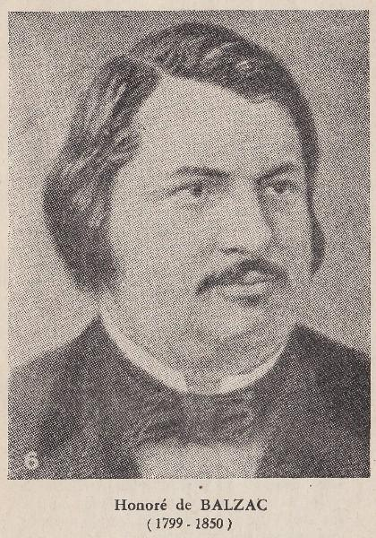

Bu tercümenin her türlü basım ve yayım hakları Millî Eğitim Bakanlığına aittir. Bakanlığın müsaadesi alınmadıkça bu tercümenin, metni tamamen, kısmen veya değiştirilerek alınamaz.
HONORE DE BALZAC
NUCINGEN BANKASI
Bu eseri Vahdi HATAY dilimize çevirmiştir.
İSTANBUL 1950 - MİLLÎ EĞÎTÎM BASIMEVİ

ÖNSÖZ
Okuyucularımıza Balzac'ın bir eserini daha sunuyoruz. Yazarın kitabını ithaf ederken söylediği gibi Nucingen Bankası, Cesar Birotteau'ya bir ek olarak ve onunla birlikte yazılmış, her iki eser 1837 yılında, aralık ayının yirmisinde tamamlanmıştır. Cesar Birotteau'yu okuyanlar unutmamışlardır ki, gayesi cemiyeti olduğu gibi aksettirmek olan, bunu sağlamak üzere de bize her eserinde ölmez tipler sunan Balzac, o eserinde de daha bir çokları arasında iyi kalpli, dürüst, çalışkan bir tüccarı, bir Bourgeois gentilhomme tipini gözlerimizin önüne konmaktadır. Tours'dan yaya olarak Paris'e gelen, mağaza uşaklığı ile işe başlayan, günün birinde de aynı mağazaya patron olan, hatta Legion d'honneur nişanıyla da taltif edilen Cesar Birotteau bütün ahlâkçıların nazariyesine uygun olarak iyi vasıfları yüzünden hayatta muvaffak olmuş bir ıtriyat tüccarıdır. Yalnız, madalyanın ters tarafı da var. Sinesinde her çeşit insanı toplayan cemiyette iyilerin yanı başında alçak ruhlu hilekâr insanlar da bulunur. Cemiyet bunlardan yüz çevirmediği için, tuttukları yolun kötülüğüne rağmen onlar da hayatta pekâlâ muvaffak olmaktadırlar. Nitekim nereden geldiği bilinmeyen bir du Tillet, çok fakir bir delikanlı iken, çevirdiği dolaplar sayesinde zengin olur ve Cesar Birotteau'nun karısından yüz bulamayınca kocasını mahvetmeye de kalkışır. Zavallı iyi adam onun tuzaklarından yine etrafındaki iyilerin, meselâ kendi çırağı fakat kendisinden daha akıllı olan Popinot'nun yardımıyla kurtulur. İşte kör diyebileceğimiz cemiyette, kötülerin de başarısız kalmadıklarını daha iyi belirtmek gayesiyle olacak, Balzac Nucingen Bankası'nın Cesar Birotteau'ya yalnız bir zeyl olarak değil, aynı zamanda onun bir zıddı olarak ta kaleme alınmıştır. Yine ithafının son cümlesinde: Bu tezatta başlı başına içtimaî bir ders yok mudur? demektedir.
İsminin de pekâlâ belirttiği gibi, Balzac, Nucingen Bankası ile bizi, çoğumuzca içyüzü bilinmeyen Borsa'ya götürerek orada çevrilen dolapları, elinde parası olan sermayedarların ağızlarına yalandan bol temettü ve faiz «gevreyi» sıkıştırılarak paralarının ne şekilde sızdırıldığını göstermektedir. En yakın dostlarının bile paralarını iç etmekten utanç duymayan bir Nucingen'in, aynı kırattaki du Tillet, Rastignac, Werbrust, Claperon gibi borsacıların bazen bilerek, bazen da bilmeyerek yaptıkları suç ortaklığı sayesinde milyonlar üzerine nasıl oturduğunu görünce, sanayi ile ilgili teşebbüsler için sermaye bulmak gayesiyle çıkarılan hisse senetlerinin birer tuzaktan başka bir şey olmadıklarını anlıyoruz. Bu insanlar nazarında: «Aptalların paraları, bir Tanrı hediyesi olarak akıllıların parasıdır!» Hâlbuki demiryolları döşemek, madenler işletmek, kanallar açmak gibi teşebbüsler esasında cemiyet için ne kadar faydalıdır, iyi ellerde böyle büyük çaptaki işler ne verimli sonuçlar sağlar. Müteşebbisler arasında böylelerin de bulunduğunu söyleyen Balzac, bu noktadan hareket ederek hisse senetli şirketlerin «Ticaret serbestliğine en uygun» şekiller olduğu üzerinde durmakta, hükümete, bu serbestliği frenlemek üzere günlük kanunlar» çıkardığı, halkın parasını yatırması için kendi garantisi altında «Emniyet sandıkları» ihdas ettiği için çatmakta: «Harp zamanında ekmek için kuyruk yapıldığı gibi bir gün para için de sandıkların önünde kuyruk yapılacak» demektedir.
Eserin hoş tarafı dört kişi arasında bir konuşma şeklinde oluşudur. Balzac'ın gerek şahıslar, gerekse muhitleri hakkında verdiği sahifeler dolusu bilgiyi sevmeyenler, bu eserde renkli, sürükleyici ve baştan başa nükte dolu bir Fransız konuşması ile karşılaşacaklardır. Yalnız, yazar, bir mevzuu ele almışken, onunla ilgili diğer sosyal meselelere de sıçrayıp sonra tekrar aynı noktaya döndüğünden, hadiselerin iyi anlaşılması için büyük bir dikkate ihtiyaç gerektiğini söylemek te bizim vazifemiz oluyor.
Biz, her bakımdan doyurucu olan Balzac'ın bir eserini dilimize kazandırmış olmaktan bahtiyarlık duyarken, kendisi de para kazanmak gayesiyle bir çok teşebbüslere girişmiş olması bakımından onun, hemen hemen her eserinde temas ettiği ve Nucingen Bankası'nın da esas konusunu teşkil eden para muamelelerinde «Yetkili» olması gerektiğini sözlerimize ilâve ederek okuyucularımızı eserle baş başa bırakıyoruz.
Madam Zulma Caraud 'ya
Bu eseri yüksek ve şaşmaz zekâsı dostları için âdeta bir hazine demek olan, benim için de hem bir okuyucu kitlesi mesabesinde, hem de kusurlara en göz yumucu bir kız kardeş olan sizden başka kime ithaf edebilirim? Onu, gurur duyduğum bir dostluğun nişanesi olarak kabul etmek lûtfunu benden esirgemeyin. Siz ve sizin gibi yüksek ruhlu birkaç insan, Cesar Birotteau'ya bir zeyl olan Nucingen Bankasını okurken düşüncemi anlayacaksınız. Acaba bu tezatta başlı başına içtimai bir ders yok mu?
DE BALZAC
Paris'in en kibar içkili lokantalarında hususi locaları birbirinden ayıran tahta bölmelerin ne kadar ince olduğunu bilirsiniz. Meselâ Very'de, en geniş salon, arzuya göre konulan veya kaldırılan bir bölme ile ikiye ayrılmıştır. Nakledeceğimiz sahne orada değil ama adını söylemek işime gelmeyen iyi bir yerde geçti. Biz iki kişiydik, yalnız ben de Prud'homme de Henri Monnier gibi söyleyeceğim: «Yanımdakinin adını bildirerek onu lekelemek istemem». Birçok bakımdan nefis olan bir yemeğin tadına varıyor, küçük bir salonda, bölmenin de ince olduğunu fark ettikten sonra, alçak sesle konuşuyorduk. Biz et yemeğine başladığımız halde, ateşin çıtırdamasından başka bir şey duymadığımız yanımızdaki locaya henüz kimsecikler gelmemişti. Saat sekizi çalarken bir sürü ayak sesi ve konuşmalar duyuldu. Garsonlar şamdanlar getirdiler. Bu hal bize yanımızdaki salonun işgal edildiğini açıklamış oldu. Sesleri tanıyınca, kimler olduklarını anladım
Bunlar, bugünkü neslin birbirini kovalayan dalgalarının köpüklerinde meydana çıkmış en cüretli karabataklardan dördüydü; mevcudiyetleri bir muamma olduğu gibi, gelirleri, mal ve mülkleri olmadığı da bilinen, fakat iyi yaşayan sevimli delikanlılardı. Savaşların en amansızı kesilen modern sanayinin bu zeki önderleri, endişeleri alacaklılarına bırakır, zevkleri kendilerine ayırır, giyim kuşamdan başka şeye de merak etmezler. Esasen, belki de rollerini yapamamak korkusuyla, yaprak sigaralarını, Jean Bart [Ünlü Fransız denizcisi (1650-1702)] gibi, bir ton barut üstünde içecek kadar yiğit; küçük gazetelerden daha fazla ve kendi kendileriyle eğlenecek kadar da alaycı; keskin görüşlü ve güç kanan, haris ve müsrif, her işte parmağı olan, başkalarına haset eden fakat kendilerinden memnun kimselerdir; zaman zaman derin politikacı olan, her şeyi tahlil eden, her şeyi sezen bu adamlar, girmek istedikleri çevrede henüz kendilerini tanıtamamışlardı. Dördü arasında yalnız biri sonradan görmeydi, o da merdivenin daha ilk basamağında bulunuyordu. Parası olmak bir şey ifade etmez ve sonradan görme bir insan, eksik taraflarını ancak kendisine yapılan altı aylık bir tabasbustan sonra anlar. Az konuşkan, soğuk, yemek meraklısı, zekâdan mahrum, adı da Andoche Finot olan bu adam, kendisine yararı dokunabilecek kimseler önünde yerde sürünecek kadar düşkünlük göstermiş, artık muhtaç olmadığı insanlara karşı da küstah olacak kadar kurnazca hareket etmişti. Gustave'ın baletindeki maskaralardan birisi gibi, arkadan bakınca marki, önden bakınca köylüdür. Bu sanayi kralı yanında bir dalkavuk besler, Emile Blondet adında gazetelere yazı yazan bir adam; çok nüktedan, parlak fikirli fakat fikirlerinde insicam bulunmayan dirayetli, tembel, istismar edildiğini bilen fakat aldırış etmeyen, nankör olması da iyi olması gibi keyfine tâbi, sevilen fakat hürmet edilmeyen insanlardan biri; komedilerdeki hizmetçi kızları gibi hilekâr, isteyenden kalemini ve kalbini esirgemeyen Emile, kadın tabiatlı erkeklerin en gönül çekicisi idi. Bu çeşit adamlar için nüktedanlarımızın en tuhafı: «Bunlar çizme yerine saten ayakkabı giyseler daha hoşuma giderler.» demiştir. Couture adındaki üçüncüsü, spekülâsyonla tutunur; birbiri ardından işlere teşebbüs eder, birindeki muvaffakiyeti diğerindeki muvaffakiyetsizliğini örter. Bu sebeple, oynadığı oyunda iskambilleri sert ve cüretle kesişinin verdiği asabi kuvvet sayesinde batmadan suyun yüzünde kalır. Paris menfaatlerinin uçsuz bucaksız denizinde, sığınabileceği oldukça şüpheli bir adacık arayarak şurada burada yüzer. Tabiatıyla, huzursuzluk içinde yaşar. Hepsinin en habisi olan dördüncüsüne gelince, adını söylemek yeter: Bixiou! Ne yazık ki o, 1825’in Bixiou'su değil, fakat çenesi herkesten kuvvetli, iğneleri herkesten bol ve şaklaban olan, insandan nefret eden, bu kadar zekâyı boşu boşuna harcamış olduğuna kuduran, son inkılâpta kendisine bir pay çıkaramamış olduğu için ateş püsküren, tıpkı Funambules'deki gerçek bir soytarı gibi tekmesini herkese savuran, yüzyılını, onun rezilce maceralarını cebinin içi gibi bilen ve onları acayip buluşlarıyla süsleyen, bir maskara gibi her omuza sıçrayan ve orada cellâdın vurduğu gibi bir işaret bırakmaya çalışan 1836’nın Bixiou'sudur.
Komşularımız oburluğun ilk ihtiyaçlarını giderdiler; bizde olduğu gibi onlarda da sıra tatlıya geldi; bizim çıt çıkarmamamız yüzünden kendilerini yalnız sandılar. Sigara dumanları, tatlı faslının eğlenceleri ortasında, şampanyanın da yardımı ile bittabi, aralarında samimî bir konuşma başladı. En yumuşak duyguları katılaştıran, en lütufkâr hisleri önleyen, gülüşe de batıcı bir karakter veren, bildiğimiz o dondurucu fikirlerin izlerini taşıyan bu konuşma, neşeyi istihzaya çeviren acı alaylarla doluydu ve kendi kendilerine terk edilmiş, bencilliklerini tatminden başka da gayeleri olmayan ruhların zaafını meydana vuruyordu; bu bencillik, içinde yaşadığımız sulhun bir meyvesidir. Ancak Diderot'nun [On sekizinci yüzyılın ünlü Fransız yazarlarından.] yayınlamaya cesaret edemediği, yaraları göstermek üzere de itidali kasten elden bırakarak yazdığı Rameau'nun Yeğeni adlı hicviye, gizli hiç bir maksat olmadan yapılan bu sözlü hicviye ile kıyas kabul ederdi. Bu adamlar mütefekkirlerin henüz münakaşasını ettikleri noktalara bile saygı göstermediler, düşüncelerini harabeler üzerine kurdular, her şeyi inkâr ederek yalnız bedbinliğin kabul ettiği şeye karşı hayranlıklarını ifade ettiler, o da: paranın mutlak kudreti mutlak ilmi ve mutlak faydası. Önce ahbaplar çerçevesi dahilinde şuna buna tüfek attıktan sonra, dedikodu samimî dostları bombardımana başladı. Bixiou söze başlayınca, benim verdiğim bir işaret, kalıp dinlemek arzusunda olduğumu açıklamaya kâfi geldi. Bunun üzerine, aşağıda görüleceği gibi, bu artistin her şeye kanıksamış birkaç zeki insan nazarında haiz olduğu şöhreti kendisine kazandıran o dehşetli irticailerinden birini duyduk. Her ne kadar bu sözler sık sık kesiliyor, sonra tekrar tekrar başlıyorsa da, hafızama stenografla yazılır gibi nakşoldular. Düşünceler, konuşma şekli, her şey edebî şartların dışındaydı; esasında da bu, zamanımızı tasvir eden meş'um şeylerin bir güveci oldu; zamanımız da bu çeşit hikâyelere lâyıktır; zaten ben bunun mesuliyetini baş hikâyeciye bırakıyorum. Bixiou'nun sahneye koyduğu şahısları tasvir ederken sık sık değiştirdiği seslere uygun olarak yaptığı hareketler, taklitler her halde çok mükemmeldi, zira onu dinleyen üç arkadaşı doğru bulduklarını ve memnun olduklarını belirten sesler çıkarıyorlardı.
Blondet, Finot'ya:
— Demek Rastignac teklifini kabul etmedi ha? dedi.
— Etmedi.
Bixiou:
— Gazetelere yazı yazarım diyerek tehdit etmedin mi onu? diye sordu.
Finot:
— Bunu söyleyince, gülmeye başladı, dedi.
Blondet:
— Rastignac ölü de Marsay'in birinci dereceden vârisidir; yüksek sosyetede olduğu gibi politika âleminde de ilerleyecektir, dedi.
Couture:
— İyi ama, bu kadar parayı nasıl kazandı? diye sordu. 1819’da, meşhur hekim Bianchon'la birlikte quartier latin'in [Paris'te Sorbonne Üniversitesinin ve birçok yüksek okulların bulunduğu mahallenin adı.] sefil bir pansiyonunda yaşıyordu; ailesi, ona yüz frank gönderebilmek için kızarmış mayıs böceği yiyor, kendi memleket şaraplarını içiyordu; babasının toprakları üç bin frank tutmuyordu: üstelik omuzlarında iki kız kardeşiyle bir erkek kardeşi vardı. Şimdi ise
Finot arkadaşının sözlerini tamamladı:
— Şimdi ise, kırk bin franklık bir geliri var. Kız kardeşlerinin her birine büyük bir drahoma verdi, onlara asil kocalar buldu, toprakların intifa hakkını da annesine bıraktı...
Blondet:
— 1827 de gördüğüm vakit, o hâlâ meteliksizdi, dedi.
Bixiou:
— Oh! 1827’de, dedi.
Finot sözlerine devam etti:
— Eh! bugün onu bakan, âyan azası ve ne isterse onu olmak yolunu tutmuş görüyoruz! Delphine ile olan münasebetini üç yıl önce gürültüsüz patırtısız kesti, ancak iyi bir kısmet bulunca evlenir artık, asil bir kız da alabilir; oğlan zengin bir kadına bağlanmakla akıllılık etti.
Blondet:
— Olayların da ona yardım ettiğini unutmayın, dostlar dedi. Sefaletin pençesinden kurtulduğu gün işgüzar bir adamın eline düştü.
Bixiou:
— Nucingen'i pekâlâ tanırsın, dedi. İlk zamanlarda Delphine ile Rastignac onu saf buluyorlardı. Evinde yaşayan bir kadın Nucingen'in nazarında bir oyuncak, bir süs gibiydi. Benim düşünceme göre, bu adamı yusyuvarlak yapan da budur: Nucingen, servetini karısının temsil ettiğini, politika adamlarının ve büyük maliyecilerin yüksek basınçlı hayatlarında kadının elzem, fakat ikinci plânda bir şey olduğunu söylemekten çekinmiyor. Bonaparte'ın, Josephine'le olan ilk münasebetlerinde bir burjuva gibi sersemce hareket ettiğini, onu bir basamak gibi kullanmak cesaretini gösterdikten sonra, onunla evlenmek istemesinin gülünç olduğunu benim önümde söyledi.
Blondet:
— Her üstün insan, kadın bahsinde, Şarklıların düşüncelerine sahip olmalıdır, dedi.
— Baron Nucingen şark akideleriyle garp akidesini karıştırarak ondan güzel bir Paris akidesi çıkardı. De Marsay'den nefret ederdi, çünkü o, burnuna halka takılacak kadar yumuşak başlı değildi; Rastignac'tan ise çok hoşlandı ve Rastignac'ın ruhu bile duymadan onu istismar etti: evinin bütün yükünü ona bıraktı. Rastignac, Delphine'in bütün heveslerini yerine getirmek işini omuzlarına aldı, onu Boulogne ormanına [Paris civarında büyük ve güzel bir ormandır.], tiyatroya götürdü. Bugün büyük bir politikacı olan bu ufak tefek adam, hayatını uzun zaman aşk pusulaları okumak ve yazmakla geçirdi. İlk günlerde, Eugene en ufak şeyler için azar işitir; Delphine neşeliyse, o da neşelenir, üzüntülü ise, o da üzülür, onun baş ağrılarının, iç dökmelerinin yükünü çeker, bu aylak Parisli kadının boş vakitlerini doldurmak için ona bütün zamanını, saatlerini, kıymetli gençliğini vakfederdi. Delphin'le beraber, ona en iyi gidecek süsü bulmak için saatlerce kafa kafaya verirlerdi. Öfkelere katlanır, ani heveslerin bombardımanına uğrar, hâlbuki genç kadın mükâfat olarak ona değil, kocası barona karşı sevimli davranırdı. Baron içinden güler, Rastignac'ı hücumlar karşısında ezilir büzülür görünce, bir şeyden şüpheleniyormuş gibi bir hal takınır iki sevgiliyi müşterek bir korku içinde bağlardı.
Couture:
— Zengin bir kadının Rastignac'ı yaşatmasını, hem de şerefli bir şekilde yaşatmasını anlıyorum; fakat elindeki serveti nereden buldu? diye sordu. Bugün onunki gibi muazzam bir servet sokakta bulunmaz, kimse de büyük bir iş başardığını söylemiyor.
Finot:
— Mirasa kondu, dedi.
Blondet:
— Kimin mirasına? diye sordu.
Couture:
— Rastladığı budalaların mirasına, cevabını verdi.
Bixiou:
— Hepsini böyle elde etmedi, sevgili dostlarım:
Bu büyük telâşı bırakın siz
Hileyle çok dost olan bir zamanda yaşıyoruz biz
Ben size servetinin nereden geldiğini anlatayım, dedi. Önce kabiliyete saygı gösterelim! Rastignac, Finot'nun dediği gibi, bir oğlan değil, kumar bilen, iskambilden anlayan ve kibar âleminin hürmet ettiği bir centilmendir. Gerekli anda lâzım olduğu kadar zekâ eseri gösteren bir adamdır, tıpkı gönüllü olarak gidecek bir askerin cesaretini satarken doksan günü, üç imzayı ve garantileri şart koştuğu gibi. Ters, mantıksız lâf eden, fikirlerinde insicam, projelerinde sebat, düşüncelerinde katiyet bulunmayan bir adam gibi görünür. Fakat ciddî bir iş, peşi bırakılmayacak bir teşebbüs bahis mevzuu oldu mu, Rastignac, böyle vaziyette, meselâ komşunun hesabına münakaşa eden şu Blondet gibi dağınık bir insan olmaz, toparlanır, aklını başına alır, hücum edilecek noktayı tetkik eder, o noktaya bütün kuvvetiyle yüklenir. Murat'varî [Murat: Napolyon’un kaynı ve yiğit bir general.] bir yiğitlikte düşman hatlarını, hissedarları, müessisleri, bütün şirketi altüst eder; hücum, istediği gediği açtı mı, tekrar sünepe ve ilgisiz hayatına döner, tekrar sıcak memleket adamı, şehvetine düşkün, boş sözler söyleyen aylak Rastignac olur ve o zaman yatağından öğleyin kalkabilir, çünkü buhranlı günde yatak yüzü görmemiştir.
Finot:
— Bunların hepsi iyi de, sen şu servetini nasıl elde etti onu anlat bakalım, dedi.
Blondet söze karışarak:
— Bixiou: bize ancak şöyle bir hikâye uyduracaktır, dedi, Rastignac'ın serveti Delphine de Nucingen'dir, fevkalâde ve basirete cüreti de katan bir kadın...
Bixiou:
— Sana ödünç para mı verdi yoksa? diye sordu.
Hepsi kahkahayı bastı.
Couture, Blondet'ye:
— Siz onun hakkında yanılıyorsunuz, dedi. Zekâsı az çok iğneli lâf etmekten, sıkıcı bir sadakatle Rastignac'ı sevmekten, ona gözü kapalı itaat etmekten ibarettir, tastamam bir İtalyan kadını.
Andoche Finot suratını ekşiterek:
— Parası hariç, dedi.
Bixiou suni bir tatlılıkla sözlerine devam etti:
— Hadi, hadi, bütün bu söylediklerimizden sonra, bu zavallı Rastignac'ı Nucingen bankasından geçindiği, onun tarafından rahata kavuşturulduğu için hâlâ kabahatli bulmaya cesaret mi ediyorsunuz? La Torpille de, vaktiyle, dostumuz des Lupeaux tarafından tıpkı böyle bakılmadı mı? Bu şekilde düşünürseniz, Saint-Denis sokağının adiliğine düşersiniz. Evvelâ, Royer Collard'ın dediği gibi histerimizden tecerrüt ederek ele alırsak, mesele, Sâf Aklın Tenkidi [Sâf aklın tenkidi (la critique de la raison pure) Kant'ın henüz dilimize çevrilmemiş bulunan felsefi eseri. (yayınlanmıştır -Yayıncının notu)] ne dayanabilir, gayrı saf aklınkine gelince, Finot, Blondet'ye:
— Al işte, başladı! dedi,
Blondet:
— Hakkı var! diye bağırdı. Mesele çok eskidir, la Châteigneraie ile Jarnac [1547 de kılıcının tersiyle hasmının oyluğunu ikiye bölerek bu beklenmedik darbe ile la Chateigneiraie’yi düelloda öldüren Fransız subayı. ] arasındaki ölümle biten düelloya da böyle bir mesele sebep oldu. Jarnac, kaynanasıyla sevişmekle itham edildi; kadın çok sevdiği damadının debdebe içinde yaşamasını sağlıyordu. Bir hâdise çok doğru oldu mu, açığa vurulmamalıdır. La Châteigneraie, bu dedikoduya yol açan kral II. Henri'ye karşı duyduğu bağlılık yüzünden kralın kabahatini kendi üzerine aldı; Fransız dilinin Jarnac darbesi [Jarnac darbesi tabiri Fransızca’ya yukarıdaki olaydan ötürü girdi.] denilen bir tedbirle zenginleşmesine sebep olan düello da bundan doğdu.
Finot:
— Ya! Demek tabirin menşei çok eski, o halde o da asil! dedi.
Blondet:
— Eski bir gazete ve mecmua sahibi olman sıfatıyla sen bunu bilmeyebilirdin, dedi.
Bixiou sözlerine ciddiyetle devam etti:
— Hayatlarını taksim edebilen ve bunların ancak bir kısmını verebilen kadınlar da, erkeklerde vardır. [Kitabın aslında «scinder» -taksim etmek- kelimesi üzerinde bir mülâhaza varsa da biz bunu vermenin imkânsız olduğunu gördük.]. Bu insanlar için her çeşit maddi menfaat, duyguların dışındadır; hayatlarını, zamanlarını, şereflerini bir kadına verirler ve kadınla kendi aralarında, üzerinde “kanun kalpazanı ölümle cezalandırır” sözü yazılı ipekten banknotları sarf etmeyi iyi bulmazlar. Karşılık olarak, bu insanlar kadından hiç bir şey kabul etmezler; evet, duyguların kaynaşması gibi menfaat kaynaşması da olursa, onların nazarında her şey küçültücü olur. Bu akidenin sözü edilirse de kendisi nadiren tatbik edilir.
Blondet:
— Saçma düşünceler! dedi. Kibarlık nedir bilen mareşal de Richelieu ocaktaki plâka macerasından sonra, madam de la Popeliniere'e yirmi dört bin franklık bir gelir bağladı. Agnes Sorel servetini sâfiyane kral VII. Charles'e takdim etti, kral da kabul etti. Jacques Coeur Fransa tacının masraflarını gördü, krallık ses çıkarmadı, sonra da bir kadın gibi nankör çıktı.
Bixiou:
— Baylar, dedi, bozulmayan bir dostlukla beraber olmazsa, aşk bana geçici bir hovardalık gibi gelir. Tam bir feragat olmadan bir teslimiyetin ne kıymeti olur? Birbirine bu kadar zıt ve her ikisi de ahlâka çok mugayir olan bu iki akide arasında bir uzlaşma sağlamaya imkân yoktur. Benim fikrime göre, tam bir bağlılıktan korkan insanlar hiç şüphesiz, bu bağlılığın bitebileceğine inananlardır; bu takdirde, insanları avutan hülyalara elveda demek lâzım! Ebedî olduğuna inanmayan ihtiras, iğrençtir. (Bu sözler hiç ilâvesiz Fenelon'undur.) Bu sebeple, cemiyeti tanıyanlar, her şeyi görebilenler, centilmen insanlar, bir kadınla serveti için evlenmekten yüzleri kızarmayan şık kravatlı ve eldivenli kimseler, menfaatlerle duyguların tam bir ayrılığının elzem olduğunu ileri sürerler. Geri kalanlar, seven, kendilerini metresleriyle dünyada yalnız sanan çılgınlardır! Bu insanların nazarında milyonlar bir hiçtir; sevilen tarafından giyilen bir eldiven, takılan bir kamelya milyon değerindedir! Siz onların, kötü maden dediğimiz parayı sarf ettiklerini görmezsiniz, ama kıymetli ağaçtan yapılmış güzel kutular içinde kurumuş çiçekler sakladıklarını görürsünüz! Onları artık birbirinden ayırmak imkânsızdır. Onlar için artık ben diye bir şey yoktur, ağızlarından yalnız sen çıkar. Ne denir? Kalbin bu gizli hastalığına mâni olabilir misiniz? En ufak bir hesabı olmadan seven ahmaklar olduğu gibi, severken hesap eden akıllılar da vardır.
Blondet:
— Bixiou bence fevkalâde güzel konuştu. Sen ne dersin, Finot? diye sordu.
Finot, kravatını düzletip bir poz takınarak:
— Başka her yerde ben de centilmenlerin fikrine uyardım, ama Rastignac işinde düşünüyorum, dedi:
Bixiou:
— Beraber bulunmakla şeref duyduğun reziller gibi, diye devam etti.
Finot:
— Evet, öyle, dedi.
Bixiou, Couture'e:
— Sen ne dersin? diye sordu.
Couture:
— Saçma şeyler, dedi. Bence seçtiği erkeğin gayesine ulaşması için kendisini basamak gibi kullandırmayan bir kadın, yalnız kendisini düşünen bir kadındır.
— Ya sen, Blondet?
— Ben işi tatbik ediyorum.
Bixiou en müstehzi sesiyle:
— İyi ama Rastignac sizin fikrinizde değildi, dedi. Almak ve geri vermemek pek çirkin, hatta biraz hafif bir harekettir; ama yüz misliyle mukabele eden bir beyzadeyi taklit etmek üzere almak, şövalyelere has bir harekettir. Rastingac böyle düşünüyordu işte. Rastignac, Delphine de Nucingen'le aralarındaki menfaat birliğinden çok hicap duyuyordu, bu husustaki ıstırabından bahsedebilirim, onu, gözlerinde yaşlarla halinden şikâyet ederken gördüm. Evet, bu yüzden hakikaten ağlıyordu!... tabii yemeklerden sonra. Demek size göre....
Finot:
— Bırak canım, sen bizimle alay ediyorsun, dedi.
— Ne münasebet! Rastignac bahis mevzuu; onun ıstırabı sizin düşüncenize göre ahlâk düşkünlüğünün bir delilidir, çünkü bu takdirde Delphine'i çok daha az seviyordu diyeceksiniz! Ama ne yapalım ki zavallı oğlanın yüreğinde bu diken vardı. O çok bozulmuş bir beyzade, biz de faziletli artistler oluyoruz! Dediğim gibi Rastignac, Delphine'i zenginleştirmek istedi, biri fakir, ötekisi zengin! İnanır mıydınız: Muvaffak da oldu. İcabında Jarnac gibi dövüşebilecek olan Rastignac, bu karar üzerine, II. Henri'nin şu büyük sözü yüzünden onun düşüncesine uydu: Mutlak fazilet yoktur, şartlara bağlı fazilet vardır. Bu onun servetinin hikâyesiyle ilgilidir.
Blondet zarif bir saflıkla:
— Bizi kendi kendimizi kötülemek durumuna düşüreceğin yerde hikâyene başlasan daha iyi olurdu, dedi.
Bixiou onun ensesine hafif hafif vurarak:
— Maşallah, yavrum, şampanya içtikçe kendini buluyorsun dedi.
Couture:
— Hissedarların başı için bize hikâyeni anlat dedi.
Bixiou devamla:
— Tam başlamak üzereydim, ama sen verdiğin antla beni hikayemin sonuna götürüyorsun, dedi.
Finot:
— Demek hikâyede hissedarlar var, diye sordu.
Bixiou:
— Hem seninkiler gibi para babası hissedarlar, cevabını verdi.
Finot çok ciddî bir tonla:
— Sıkıştığın zaman sana beş yüz frank vermekten kaçınmayan iyi bir adama karşı biraz saygılı olman gerekir gibi geliyor bana, dedi.
Bixiou:
— Garson! diye bağırdı.
Blondet ona:
— Ne isteyeceksin garsondan? diye sordu.
— Finot'ya iade etmek üzere beş yüz frank. Bununla dilimin hürriyetini sağlayacağım, minnetimi de yok edeceğim.
Finot gülüyormuş gibi yaparak:
— Hikâyeni anlat, dedi.
Bixiou:
— Hepiniz şahitsiniz ya, sükûtumun ancak beş yüz frank ettiğini sanan bu küstaha karşı hiçbir bağlılığım yok! dedi. Eğer vicdanların değerini takdir edemezsen, hiçbir zaman bakan olmasın. Nazlı bir sesle: — Pekâlâ, dostum Finot, hikâyeyi kendimden bir şey katmadan söyleyeceğim, bu şekilde ödeşmiş oluruz, dedi.
Couture gülümseyerek:
— Bize şimdi Rastignac'ın servetini Nucingen'in temin ettiğini ispat edecek, dedi.
Bixiou:
— Hakikate tahmininden çok daha yakınsın, dedi. Para işleri bakımından Nucingen'in ne olduğunu bilmiyorsunuz.
Blondet:
— Sen de onun ilk günleri hakkında hiçbir şey bilmezsin ya, dedi,
Bixiou:
— Ben onu sadece evinde tanıdım, ama büyük hayat yolunda vaktiyle bir birimizi görmüş olabiliriz, dedi.
Blondet sözlerine devam ederek:
— Nucingen bankasının gelişmesi bizim devrin en olağanüstü hâdiselerinden biridir, dedi. 1804’te, Nucingen az tanınıyordu, o zamanın bankerleri onun poliçelerinden üç yüz bin franklığının piyasada olması fikriyle tir tir titrerlerdi. Bu büyük maliyeci o zaman küçüklüğünü hissediyor. Kendini nasıl tanıtsın? Ödemeyi kesiyor. Bunun üzerine Strasbourg'la Poissonnere mahallesinde mahsur kalmış olan adı, bütün piyasalarda ağızdan ağıza dolaşıyor. Müşterilerinin alacaklarını para etmeyen eshamla karşılıyor, ödemeye tekrar başlıyor; derhal hisse senetleri bütün Fransa'ya yayılıyor. İşitilmedik bir vaziyet oluyor, hisse senetlerinin kıymeti artıyor, tekrar itibar görüyor, kâr veriyor. O zaman Nucingen'in hisse senetleri her tarafta aranıyor. 1815 geliyor, bizim delikanlı sermayesini bir araya getiriyor, Waterlo savaşından önce, esham satın alıyor, buhran esnasında ödemeyi kesiyor, bizzat kendisinin çıkardığı, evet, baylar, kendisinin bizzat çıkardığı ve kıymetlerinden yüzde yirmi aşağısına temin ettiği Wortschin madenlerine ait hisse senetleriyle tasfiye ediyor. Bugünkü kont d'Aubrion'un namuslu babası olan Grandet’in iflâs edeceğini kestirerek ondaki parasını garanti etmek maksadıyla ondan yüz elli bin şişe şampanya, Duberghe'den de bir o kadar Bordo şarabı alıyor. Kabul ediyor göründüğü, hem de, azizim, bir buçuk franga kabul ediyor göründüğü bu şarapları Palais-Royal'de şişesini altı franga 1817 ile 1819 arasında müttefiklere içiriyor. Nucingen bankasının hisse senetleri ve adı bütün Avrupa'ya yayılıyor. Bu ünlü baron, herkesin mahvolabileceği uçurum üstünde böylece yükseldi. Bankasını tasfiye edişi iki kere hisse sahiplerine büyük kazançlar sağladı: onları kandırmak istedi, ama imkânsız! Çünkü dünyanın en namuslu adamı olarak biliniyor. Ödemeyi üçüncü defa keserse, hisse senetleri Asya'da, Meksika'da, Avustralya'da vahşiler arasında satılacak. İhtirası yüzünden din değiştirmiş bir Yahudinin oğlu olan bu Alsaslıyı anlayan biricik insan Ouvrad oldu: «Nucingen altınını vermeğe başladı mı, derdi, inanın ki yerine elmas alacaktır!»
Finot:
— Meslektaşı du Tillet de ondan aşağı kalmaz, dedi. Düşünün ki yaşamamız için bizlere ne kadar asalet lâzımsa, ancak onda da o kadarı bulunan bu adam, 1814’te, beş parası olmayan bir delikanlı iken bugün biliyorsunuz ne oldu; fakat hiç birimizin yapamadığı bir şeyi (Couture sen hariçsin.) o yaptı: düşman yerine dostlar kazandı. Nihayet mazisini o kadar iyi gizledi ki, onun 1814’te Saint Honore sokağındaki bir ıtriyatçının yanında seyyar komisyonculuk yaptığını meydana çıkarmak için en aşağı yerlerde araştırma yapmak lâzım geldi.
Bixiou:
— Hadi, hadi, Nucingen'i du Tillet gibi bir dolandırıcıyla hiçbir zaman kıyaslamayın. Du Tillet aldığı koku ile muvaffak olan, kadavraları sezen ve en iyi kemiği yakalamak için herkesten önce gelen bir çakaldır. Bir defa bu iki adama bakın: birisinde kedilerin sivri yüzü var, zayıf ve uzun boyludur; ötekisi dört köşe, şişman, bir çuval gibi ağır, bir diplomat gibi hareketsizdir. Nucingen'in kaba elleri, vaşağınkine benzeyen ve hiçbir zaman alevlenmeyen gözleri vardır; derinliği öne doğru değil, geriye doğrudur, yani ona nüfuz edilemez, plânları önceden keşfedilemez, oysaki du Tillet'ninkiler Napolyon'un bilmem kimin için söylediği gibi, çok ince eğrilmiş pamuğa benzer, kopar.
Blondet:
— Benim, du Tillet'ye nazaran Nucingen'de gördüğüm biricik üstünlük şudur:
O, sağduyusu ile bir maliyecinin baron olması gerektiğini sezmiştir, hâlbuki du Tillet kendisine İtalya'da kont dedirtmek istiyor, dedi.
Couture:
— Blondet, bir kelime söyleyeceğim, yavrum, dedi. Evvelâ Nucingen: «Namuslu adam yok, öyle görünenler var.» demek cesaretini gösterdi; sonra onu iyi tanımak için işlerin içine girmek gerek. Onun nazarında banka çok dar bir şubedir: Hükümetin istediği levazım var, şaraplar, yünler, çivitler var, bir kelimeyle kâr getiren her eşyada iş var. Dehası her mevzuu sarar. Ticaretin âdeta bir fiili mesabesinde olan bu adam, milletvekillerini bakanlara, Yunanlıları, Türklere satacak kabiliyettedir. Yerimde Cousin olsa derdi ki: «Onun nazarında ticaret, her çeşit maddeyi ele almak, nadir olanı da bir elde bulundurmaktır.» Böyle alınınca, banka başlı başına büyük bir politika olur, kudretli bir baş ister, o zaman pişmiş bir insanı, içinde kendini eli kolu bağlı hissettiği dürüstlük kaidelerinin üstüne çıkmaya sevk eder.
Blondet:
— Haklısın, çocuğum, dedi. Ama yalnız bizler anlıyoruz ki bu, para âleminde harp açmak demektir. Banker, gizli emellerine ulaşmak için kitleler feda eden bir fatihtir, askerleri de hisse senetleri alanların menfaatleridir. Onun hazırlanacak plânları, kurulacak tuzakları, ileriye sürülecek tarafları, alınacak şehirleri vardır. Bu adamların çoğu politika ile o kadar ilgilidir ki eninde sonunda ona karışırlar ve servetleri bu yolda erir gider. Necker bankası bu şekilde mahvoldu; meşhur Samuel Bernard da bu yolda hemen hemen iflâs etti. Her yüzyılda, muazzam serveti olan, fakat ne servet ne de vâris bırakan bir banker çıkar. Law'ı yıkmaya çalışan Paris kardeşler ve yanında hisse senetli bankalar tesis eden Bouret, Beaujon gibilerin cüce kaldıkları Law'ın kendisi bile, bir aile tarafından temsil edilmeden göçüp gittiler. Zaman gibi banka da çocuklarını parçalar. Payidar olabilmek için banker, asil olmak, bir sülâle kurmak zorundadır, tıpkı Charles- Quint'in Baben-hausen prensleri yaptığı Fugger adındaki mukrizleri gibi. Bu prensler hâlâ mevcuttur Gotha'nın almanağında!
Banka payidar olmak hususundaki içgüdüsüyle, belki de farkında olmadan, asalet ister. Jacques Coeur, XIII. Louis zamanında sönen Noirmoutier adında asil bir sülâle kurdu. Meşru bir kralı tahtına oturtmak uğrunda servetini harcayan bu adamdaki enerji hiç kimsede görülmemiştir! Ege denizindeki ve muhteşem bir kilise yaptırmış olduğu bir adanın prensi olarak dünyaya gözlerini yumdu.
Finot:
— İşi tarih dersine dökmekle, krallık devrindeki asalet atfetmek hakkı elinden alınmış bulunan ve ne yazık ki gizli oturumlarla baronlar, kontlar ihdas edilen bugünün dışına çıkıyoruz, dedi.
Bixiou:
— Sen para ile asalet elde etme usulünün kaldırıldığına yanıyorsun, hakkın var, dedi. Ben hikâyeme dönüyorum. Beaudenord'u tanır mısınız? Hayır, hayır, hayır. Pekâlâ. Bakın her şey nasıl geçiyor! Zavallı çocuk on yıl önce züppelerin gülüydü. Yalnız o kadar meşguldü ki, demin Finot'nun Jarnac darbesinin menşeini bilmemesi gibi, siz de onu tanımıyorsunuz. (Finot, söz geldi diye söylüyorum, yoksa gayem sana takılmak değil!) Bu genç aslında Saint Germain [Kibarların oturduğu mahalle.] mahallesindendi. İşte, Beaudenord, size sahneye koyacağım ökseye tutulmuş güvercinlerin birincisidir. Önceleri adı Godefroid de Beaudenord'du. Ne Finot, ne Blondet, ne Couture, ne de ben, böyle bir üstünlüğün kıymetini inkâr edemeyiz [Bir ismin önünde de olması o ismi taşıyanın asil olduğunu gösterir.]. Bir balodan çıkarken başlarında kukuletaları, yanlarında kocaları ve sevgilileri bulunan otuz kadın arabalarını beklerken, adamlarının çağrıldığını duymaktan bizim delikanlının onuru kırılmıyordu. Sonra Tanrı'nın insana verdiği her azası yerindeydi: sıhhatli ve kusursuz olduğu gibi ne gözünde leke, ne başında takma saç, ne de baldırlarında fomolle [Fomole; (faux mollets) o tarihlerde baldırların daha kalın görünmesi için kullanılan bir nevi getirin adı.] vardı; ayakları ne içeriye, ne de dışarıya kıvrıktı; hastalıksız dizleri, doğru omurgası, zarif bir vücudu, beyaz ve güzel elleri, siyah saçları vardı; teni ne bir bakkal çırağınınki kadar pembe, ne de bir Kalabralınınki kadar esmerdi. Kısacası ve en mühim tarafı! Beaudenord, güzelliklerini teşhir eden, bu suretle başka şeyleri olmadığını ortaya koyan dostlarımızdan bazıları gibi çok güzel bir adam değildi; ama bu noktaya dönmeyelim, önce de söylediğimiz gibi, bu çok küçültücü bir şey! Beaudenord iyi tabanca kullanır, ata çok güzel binerdi; bir hiç yüzünden dövüşmüş fakat hasmını öldürmemişti. Biliyor musunuz ki, on dokuzuncu yüzyılda, Paris’te, tam, saf, sade bir saadetin, yirmi altı yaşındaki bir gencin saadetinin neden ibaret olduğunu göstermek için hayatın en ufak teferruatına girmek gerektir? Ayakkabıcı Beaudenord'un ayağını yakalamış ona şık ayakkabılar giydirir, terzisi de ona elbise yapmaktan hoşlanırdı. Godefroid'nın dili peltek değildi, Gaskonyalılar, Normandiyalılar gibi ayrı bir şivesi olmadığı gibi temiz ve dürüst konuşur, Finot gibi de kravat bağlayışına ihtimam gösterirdi. Vasisi marki d'Aiglemont'un karısı tarafından kuzeni olduğu için (çünkü anadan babadan yetim kalmıştı, bu da onun için ayrı bir saadet!) bankerlerin evlerine gidebilirdi ve giderdi de; bundan dolayı Saint-Germain mahallesi ona sitemde bulunmazdı, çünkü hoş olan bir şey varsa, o da bir gencin zevki kendisine esas kaide yapmak, eğlenilen yerlere koşmak, üzüntünün hüküm sürdüğü yerlerden kaçmak hakkına malik oluşudur. Sonra bizim genç aşılanmıştı da, (Beni anlıyorsun ya Blondet). Bütün bu faziletlere rağmen, Beaudenord kendini çok bedbaht bulabilirdi. Hah! hah! Saadetin mutlak bir şeye delâlet eder gibi görünmek talihsizliği vardır; bu görünüş birçok budalaya şu suali sordurur; «Saadet nedir?» Çok kafalı bir kadın: «Saadet insanın onu bağladığı şeydedir.» dedi.
Blondet;
— Hazin bir hakikati ifade etmiş, dedi.
Finot;
— Aynı zamanda ahlâki bir hakikati diye ilâve etti.
Blondet:
— Ahlâkî de söz mü! Saadet, fazilet gibi, kötülük gibi nispî bir şey ifade eder, dedi. Meselâ la Fontaine, cehennemlik olanların zamanla içinde bulundukları hale alışacaklarını, cehennemde tıpkı balıkların suda oldukları gibi olacaklarını umuyordu,
Bixiou;
— Bakkallar la Fontaine'in bütün vecizelerini bilirler! dedi.
Blondet, sözünün bu şekilde kesilmesindeki manayı anlamadan devam etti:
— Paris'te yaşayan yirmi altı yaşındaki bir gencin saadetiyle Blois'da yaşayan yirmi altı yaşındaki bir gencin saadeti bir olmaz. Fikirlerin kesin olmayışına karşı hücum etmek için bu noktadan hareket edenler, hilekâr veya cahil insanlardır. En büyük şerefi 1799 ile 1837 arasında farazi halden müspet ilim haline geçmek olan modern hekimlik — bu da Paris'in büyük tahlilci okulunun tesiriyle olmuştur—insanın belli bir devrede tamamıyla değiştiğini ispat etmiştir.
Bixiou söze karışarak:
— Jeannot'un bıçağı gibi; insan onu daima aynı sanır [Jeannot, elinde bir sap olduğunu iddia ederek birinden bıçağın demir kısmını elde eder; bir başkasından da demiri olduğunu söyleyerek sap ister. Bıçak eskidikçe hep bu usulü tatbik eder. Sap veya demir değişir, ama insan onu hep aynı bıçak sanır.], dedi. O halde, bizim saadet dediğimiz bu Arlequin'in [On yedinci yüz yıldan beri İtalyan sahnesinden hemen hemen bütün Avrupa sahnelerine geçmiş olan komik tip; sırtında değişik renkte ve üçgen şeklinde kumaş parçalarından yapılmış bir elbisesi vardır.] elbisesi üstünde değişik renkte bir sürü parçalar var. Bizim Godefroid'ın kostümünde ise, ne delik, ne leke bulunuyordu. Aşkta bahtiyar olabilecek, yani parlak gençliği için değil, zekâsı için değil, tavırları için değil, hatta Royer-Collard'ın sözünü tekrar ederek söyleyelim, manevi bir aşkın kendisi için bile değil, fakat dayanılamayacak olduğu için sevilecek yirmi altı yaşında bir gencin sevgilisi tarafından örülmüş olan kesesinde meteliği olmayabilir, ev sahibine kirasını, demin adı geçen ayakkabıcısına çizmelerini, sonunda Fransa gibi teveccühten düşebilecek olan terzisine de elbiselerini borçlu olabilir, yani kısaca yoksul olabilir! Menfaatlerin birbiri içinde erimesi hakkında bizim yüksek düşüncelerimize malik olmayan bir gencin saadetini, sefalet bozar. Manen çok bahtiyar, maddeten çok bedbaht olmaktan daha yorucu hiç bir şey bilmiyorum. Bu, benim şu dakikada olduğu gibi, iki ayağımdan birinin kapının altından gelen soğukla donmuş, ötekisinin de ateşin korundan kızarmış olması demek değil midir? Sizler tarafından iyi anlaşıldığımı umuyorum, öyle değil mi, Blondet? Sen bunu herkesten daha iyi bilirsin. Aramızda kalbi bir kenara bırakalım, zekâyı bozuyor. Hikâyeye devam edelim! Godefroid de Beaudenord'un ayakkabıcısı, terzi vesairesi tabii ona hürmet ederlerdi, çünkü oldukça muntazaman paralarını alırlardı. Demin sözünü ettiğimiz zeki kadın ki adını söyleyemem, çünkü kalbinin çok hassas olması yüzünden hâlâ yaşıyor...
— Kim bu?
— Markiz d'Espart! Evet, bu kadın diyordu ki genç bir adam birinci katta oturmalı, ev halini belli edecek hiçbir şeyi olmamalı, ne aşçısı, ne mutfağı; işlerini yaşlı bir uşağa gördürmeli ve bir yerde mıhlanıp kalmaya karşı hiçbir isteği de bulunmamalı. Onun fikrince, bunun dışında kalan her şekil yakışıksızdır. Godefroid de Beaudenord, bu programa sadık olarak Malaquais rıhtımında, bir evin birinci katında otururdu; bununla beraber, evli insanlarla bir noktada birleşmek zorunda kalmıştı: odasına, mahaza darlığı yüzünden çok yer almayan bir yatak yerleştirmişti. Onun evine tesadüfen girecek bir İngiliz kadını, orada ayıp olabilecek hiçbir şey bulamazdı. Finot, İngiltere'yi idare eden bu büyük ayıp kanununun ne olduğunu sen sorar öğrenirsin! Ama dur, mademki bir bin franklıkla birbirimize bağlı bulunuyoruz, sana bu hususta bir fikir vereyim. Ben gittim İngiltere'ye! (Blondet'nin kulağına alçak sesle ona iki bin franklık, belki de daha fazla bir kıymette espri veriyorum, dedi.) İngiltere’de, Finot, gece baloda veya başka bir yerde bir kadınla sıkı fıkı dost oluyorsun; ertesi gün ona sokakta rastlıyorsun ve onu tanır gibi davranıyorsun: ayıp! Yemekte, solunda oturan fraklı bir insanda hoş, zeki, alçak gönüllü, serbest tavırlı bir adam buluyorsun; onda İngilizlikten eser yok; çok mültefit, çok sevimli olan eski Fransız âdeti kanunları gereğince onunla konuşmak istiyorsun: ayıp! Baloda dansa kaldırmak için güzel bir kadına yanaşıyorsunuz: ayıp! Coşuyorsunuz, münakaşa ediyorsunuz, gülüyorsunuz, sözlerinizde kalbiniz, ruhunuz, zekânız taşıyor; bu sözlerde duygularınızı ifade ediyorsunuz, oyunda iseniz oynuyor, konuşurken konuşuyor, yemek yerken yiyorsunuz: ayıp! ayıp! ayıp! Bu devrin en nüktedan ve en derin adamlarından biri olan Stendhal, «Büyük Britanya'da falan lord, yalnızken bile, ayıp olur korkusu ile ateşin karşısında bacak bacak üstüne atmaya cesaret edemez» sözüyle bu ayıp hastalığını çok iyi belirtmiştir. Bir İngiliz kadını, hatta ateş püsküren azizler tarikatından da olsa, (bu azizler koyu protestandırlar, ayıp olan hareketlerini gördükleri zaman bütün ailelerini açlıktan ölmeye bırakacak kabiliyettedirler.) İşte böyle bir İngiliz kadını yatak odasında gürültü patırdı etmekle ayıp etmiş olmaz da, aynı odada bir dostunu kabul etse, kendini mahvolmuş sanır. Bu ayıp yüzünden bir gün Londra ve halkı taş kesilmiş bulunacaktır.
Blondet:
— Fransa'da, İngilizlerin o bildiğiniz güzel soğukkanlılıkla yaptıkları muhteşem budalalıkları bizim memlekete ithal etmek isteyen ahmaklar bulunduğunu düşününce, İngiltere'yi görmüş ve Fransızların sevimli ve zarif âdetlerini hatırlayan bir kimsenin titrememesine imkân yoktur, dedi. Son zamanlarda, ayıp bir hareket olur korkusu ile kadınları oldukları gibi tasvir etmeye cesaret edemeyen Walter Scott, Edinbourg Hapisanesi'nde Effie'nin güzel bir portresini çizmiş olduğuna, pişman oluyordu.
Bixiou. Finot'ya:
— İngiltere'de bu duruma düşmemek ister misin! diye sordu.
Finot:
— Evet, ne yapmak lâzım? dedi.
— Tuileries'ye git, orada heykeltıraşın Themistocle adını verdiği, mermerden ve itfaiye erine benzeyen bir heykel var onu gör ve bu komutanın heykeli gibi yürümeye çalış, o zaman ayıp'tan kurtulursun. Godefroid'nın saadeti ancak bu büyük ayıp kanununun sıkı tatbikiyle tamamlandı. Hikâye şu: Gencin bir "tigre"si vardı; cemiyet hayatını tanımayanlar tigre yerine groom derler [Taygr ve grum diye telâffuz edilen bu kelimeler İngilizcede seyis manasına gelir. Daha kibarcası olan taygr aynı zamanda kaplan demektir.], Beaudenord'un tigre'si bir metre boyunda, beş buçuk santim eninde, adı (arzuya göre) Paddi, Jobi, Tobby olan küçük bir İrlandalı idi; gelinciğinkine benzeyen bir yüzü, yine alışkın çelikten sinirleri, benimki gibi keskin kertenkele bakışı, Rubens [Ünlü Flaman ressamı. (1577-1640).] in bakirelerini andıran saçları, pembe yanakları vardı. Sincap gibi çevik, ne Londra'da, ne de Paris'te hiç azalmayan bir maharetle araba süren, İhtiyar Franconi kadar ata binmesini bilen, kumar oynayan, küfür eden, reçeli ve puncu seven, bir prens gibi kapalı kutu, bir emekli avukat kadar bilgili, bir gazete kadar tahkir edici, bir Paris piçi kadar atılgan ve hırsız, bir kelimeyle, on yaşında gerçekten fitne fücur örneği denecek bir oğlandı. Meşhur bir İngiliz lorduna hem şeref hem de para getiriyordu. Bu lorda at yarışlarında yedi yüz bin frank kazandırmıştı. Lord bu çocuğu çok severdi; tigre'si antika gibi bir şeydi. Londra'da da kimsenin bu kadar küçük tigre'si yoktu. Bir yarış atı üstünde, Joby'nin bir şahin hali vardı. Bu böyleyken lord Toby'yi kovdu, ne oburluk yüzünden ne hırsızlık yüzünden, ne cinayet yüzünden, ne suç teşkil edecek bir konuşma yüzünden, ne bir terbiyesizlik yüzünden, ne mayleydiye karşı yapılmış bir hakaret yüzünden; ne de mayleydinin baş hizmetçisinin ceplerini boşaltma yüzünden, ne yarışlarda maylordun rakipleriyle uyuşma yüzünden, ne pazar günü eğelenmiş olma yüzünden, bir kelimeyle, kabahat olabilecek herhangi bir hareket yüzünden değil. Toby bütün bunları yapsaydı, hatta kendisine sual tevcih edilmeden maylorda söz söyleseydi, maylor yine onun bir ev içinde her zaman olabilecek bu çeşit bir günahını affederdi. Efendisi Toby'nin çok şeyine tahammül ederdi, çünkü ona çok bağlıydı. Tigre'i iki tekerlekli ve biri önde, diğeri arkada olmak üzere koşulmuş iki atlı bir arabayı, ikinci atın üstünde oturarak, bacakları araba kollarına bile varmadan sürerdi. Onun bu vaziyette, İtalyan ressamlarının Allah babanın etrafına serpiştirdikleri meleklere benzeyen bir hali vardı. Bir İngiliz gazetecisi bu küçük meleğin nefis bir tasvirini yaptı, bir tigre olarak onu lüzumundan fazla güzel buldu, Paddy'nin ehlileştirilmiş bir dişi olduğuna bahse girmeyi teklif etti. Tasvir vahamet kesbetmek, birinci derecede bir ayıp teşkil etmek istidadını gösteriyordu. Ayıp'ın ifratı darağacına götürür. Maylor, mayleydi tarafından ihtiyatlı bir insan olarak çok övüldü. Toby, Britanya zoolojisinde medenî halinin inkâr edildiğini gördükten sonra hiçbir tarafta iş bulamadı. O zamanlar Godefroid, Londra'daki Fransız elçiliğinde en parlak devrini yaşıyordu; orada Toby, Joby, Paddy'nin macerasını öğrenince onu aradı ve çocuğu bir reçel kavanozunun yanı başında ağlarken buldu, çünkü Toby, felâketini hafifletmek üzere maylorun verdiği liraları çoktan kumarda kaybetmişti. Godefroid onu derhal kendi hizmetine aldı. Dönüşünde Godefroid de Beaudenord İngiltere'nin en sevimli tigre'sini bizim memlekete getirdi; Couture'ün yelekleriyle tanınması gibi, o da tigre'si ile tanındı. Bu yüzden, bugün Grammont kulübü denilen kulübe kolayca girdi. Diplomatlık mesleğine veda ettikten sonra Godefroid hiç bir muhterise endişe vermiyordu, tehlikeli düşünceleri yoktu, herkes tarafından iyi karşılandı. Bizler olsak, etrafımızda yalnız mütebessim çehreler görüyoruz diye onurumuz kırılırdı. Muhterisin acı yüzünü görmekten haz duyarız. Godefroid kendisinden nefret edilmesini sevmezdi. Herkesin bir zevki var! Şimdi, işin sağlam tarafına, gencin maddi hayatına bir göz atalım. Birçok kere yemek yediğim evi, içerisinde şöminesi, banyosu bulunan, rahat eşyalarla dolu ve süslü, esrarengiz bir yatak odasıyla dikkati çekiyordu. Bu oda küçük bir merdivene açılıyordu; iki kanatlı ve sessiz bir hale getirilmiş kapısı, kolay açılır kilitleri, buzlu camlı pencereleri, kalın perdeleri vardı. Oda, en titiz sulu boya ressamının temenni edebileceği en güzel bir dağınıklığı arz ediyor, orada her şey zarif bir gencin derbeder hayatının şeklini ne kadar meydana vuruyor idiyse, yatak odası da o nispette bir mabedi andırıyordu: beyaz, temiz, derli toplu, sıcak, hiçbir tarafından rüzgâr gelmeyen, bir kadının gecelikle ve korkulu anlarda yalınayak üzerine atlayabileceği kadar yumuşak halılarla örtülü bir mabet. Burası gerçekten şıklık budalası ve yaşamasını bilen bir gencin damgasını taşıyordu! Çünkü bir genç, böyle bir evde, birkaç dakika esnasında, hayatının karakteri meydana vuran ufak teferruatı içinde ya ahmak, ya da büyük görünebilir. Demin adı geçen markiz, hayır, o değil, markiz de Rochefide, bir yatak odasından, orada görülmesi ayıp hiçbir şey bulamadığı için, ateş püskürerek çıkmış ve bir daha oraya ayak atmamış! Godefroid'nın bu odada küçük bir dolabı vardı, içi...
Finot:
— Kadın gecelikleriyle dolu! diye onun sözünü kesti.
— Hadi, yine kendini gösterdin, şişko Turcaret! [le Sage'in bir komedisinin adı; yazar bunda kafasız, namussuz ve faizle, hırsızlıkla sonradan görme bir adam olmuş ve en zengin tüccarlar arasına katılmış olan bir uşağı sahneye kor. Bu ad dilde sonradan görme maliyecileri kasteder.] (Ben ne yapsam, onu adam edemeyeceğim!) Gecelikle değil, pasta ile, yemişle dolu idi; sonra içleri Malağa ve Lunel şaraplarıyla dolu küçük, zarif sürahiler, XIV üncü Louis tarzında hazırlanmış ihtiyat bir yemek, on altı, mahallenin titiz ve iyi şeylere alışmış midelerini sevindirecek her şey vardı. Veteriner sanatında çok kuvvetli ihtiyar ve şeytan bir uşak, atlara hizmet ediyor, Godefroid'yı tımar ediyordu, zira ölü mösyö Beaudenord'un uşağıydı ve Godefroid'ya karşı kökleşmiş bir sevgi besliyordu. Uşaklarda, kalbin bir hastalığı olarak bulunan bu sevgiyi nihayet emniyet sandıkları yok etti. Her çeşit maddi saadet rakamlara istinat eder. Paris hayatını, ta hastalıklarına kadar bilen sizler tahmin edersiniz ki bu gence aşağı yukarı on yedi bin franklık bir gelir lâzımdı, çünkü on yedi frank tutan vergisi, üç bin frank ta keyfi için sarfiyatı vardı. Godefroid, sevgili arkadaşlarım, yatağından reşit olarak kalktığı gün, marki d'Aiglemont ona, bizlerin yeğenlerimize yapamayacağımız bir dürüstlükle vasilik hesaplarını sundu. Aynı zamanda, ona on sekiz bin franklık bir gelir tutan Büyük-Kitap işine bağlanmış para karşılığı olan hisse senetleri verdi; bu para Cumhuriyet tarafından budanmış, İmparatorluğun bakaya alacaklarıyla kuşa çevrilmiş baba zenginliğinin artığıydı. Bu faziletli vasi, himayesi altına aldığı genci Nucingen bankasına yatırdığı otuz bin frank kadar birikmiş paraya da sahip etti ve bunu ona büyük bir beyzade zarafeti ve imparatorluk askerine has bir serbestlikle gençlik çılgınlıkları için ayırdığını söyleyerek verdi. «Beni dinlersen, Godefroid, dedi, birçokları gibi bu parayı budalaca sarf edeceğin yerde, faydalı çılgınlıklar yap, Turin Elçiliğinde bir ateşe ödevi kabul et, oradan Napoli'ye git, Napoli'den Londra'ya dön; paran karşılığında eğlenir, hem de malûmat sahibi olursun. Daha sonra, eğer bir meslek sahibi olmak istersen, ne zamanını, ne de paranı kaybetmiş olursun». Ölü d'Aiglemont denildiğinden daha iyi bir insandı, bizler için böyle söylenmeyecektir herhalde.
Couture:
— Yirmi bir yaşında on sekiz bin franklık bir gelirle hayata atılan bir genç meteliksiz bir çocuk sayılır, dedi.
Blondet:
— Eğer cimri veya üstün bir varlık değilse, diye ilâve etti.
Bixiou devam etti:
— Godefroid, İtalya'nın dört başkentinde bir müddet oturdu. Almanya'yı, İngiltere'yi, biraz Saint - Petersburg’u gördü, Hollanda'dan geçti; fakat bu otuz bin frankı, sanki otuz bin frank geliri varmış gibi yaşayarak eritti, Her tarafta, tavuk kızartmasını, aspik denilen et veya balık jölesini, Fransız şarabını buldu, herkesin Fransızca konuştuğunu duydu, kısaca, Paris'ten uzakta olduğunu hissetmedi. Kalbini ifsat etmeyi, ona bir zırh geçirmeyi, hayat hakkındaki tatlı hayallerini kaybetmeyi, yüzü kızarmadan her şeyi dinlemeyi, esaslı hiçbir şey demeden konuşmayı, devletlerin gizli menfaatlerine nüfuz etmeyi çok isterdi. Dört dile sahip olmak için, yani bir fikre karşı dört kelimeyle mücehhez olmak için çok zahmet çekti. Yabancı ülkelerde iyi kısmet denilen can sıkıcı, fakat zengin dulların ellerinden kurtularak oralardan az pişmiş, saf, herkese karşı güvenli, evlerine kabul ederek ona şeref veren insanlar aleyhinde söz söylemekten aciz, diplomat olamayacak kadar iyi niyet sahibi, bir kelimeyle, bizim dürüst dediğimiz bir genç olarak döndü.
Couture:
— Hulâsa, elindeki on sekiz bin frangı önüne ilk çıkacak hisse senetlerine yatırmaya hazır bir bebek, dedi.
— Bu hınzır Couture hisse temettülerini vaktinden önce ortaya atmaya o kadar alışmış ki benim hikâyemin sonunu da tacil ediyor. Nereye gelmiştim? Beaudenord'un dönüşüne. Genç, Maslaquais rıhtımına yerleşince, ihtiyaçlarının temininden sonra geriye kalan bin frank İtaliens caddesindeki tiyatro ile operadaki locası için kâfi gelmedi. Oyunda olsun, bir bahiste olsun, yirmi beş veya otuz altın kaybedince, tabiatıyla ödüyordu; kazandığı takdirde de sarf ediyordu, tıpkı, eğer bahse tutuşacak kadar budalalık edersek, bizlerin yapacağımız gibi. On sekiz bin franklık geliriyle sıkıntı çeken Beaudenord, bizim bugün döner sermaye dediğimiz şekle başvurmak zaruretini hissetti. Bizzat kendisi bu yolda çok ileri gitmek istemediği için vasisinden fikir almaya gitti. D'Aiglemont ona «Sevgili çocuğum, dedi, sana gelir sağlayan senetler esas kıymetleri üstünden satılıyor; sat onları. Ben kendi hisse senetlerimi ve karımınkileri sattım, bütün sermayemi Nucingen'e bağladım. O bana yüzde altı veriyor; sen de benim gibi yap, yüzde bir fazla alırsın, bu yüzde bir de seni tamamıyla rahata kavuşturur». Üç gün içinde bizim Godefroid rahata kavuştu. Geliri, fazladan yaptığı sarfiyatı ile tam bir muvazene halinde olduğundan, maddi saadeti tam oldu. Eğer Paris'in bütün gençlerini bir bakışla suale çekmek — ki böyle bir iş ya milis kuvveti, ya da vahşi olarak bütün kürelerde yaşamış olacak milyarlarca nesiller için kıyamet gününde mümkün olacakmış — ve onlara yirmi altı yaşındaki bir gencin saadetinin çeşit çeşit iki tekerlekli araba ve yumruk büyüklüğünde Toby, Joby, Paddy gibi taze ve pembe bir tigre ile gezintiye çıkmaktan; akşam, on iki frank karşılığında çok uygun kiralık bir landon bulmaktan, saat sekizi, öğleyi, dördü ve akşamı idaresi altına alışmış bulunan kıyafet kanunları gereğince zarif bir şekilde giyinmiş olarak her tarafta görünmekten; bütün elçiliklerde iyi karşılanmak ve oralar da kozmopolit ve sathi bir dostluğun ömürsüz çiçeklerini toplamaktan; oldukça güzel ve adına, giyinişine lâyık bir şekilde vakarlı olmaktan; demin size tarif ettiğim Malaquais rıhtımındaki birinci kat dairesi gibi döşenmiş sevimli bir evde oturmaktan; daha önce kesesine bakmak zaruretini duymadan ve «Ah! ya para?» gibi bir düşünce ile makul hareketlerinin hiçbirinden alıkonmaksızın dostlarının hepsini Rocher de Cancale [O devirde Paris'in en meşhur lokantalarından biri.] de yemeye davet edebilmekten; saf kan üç atının kulaklarını süsleyen pembe renkte püskülleri yenileyebilmek ve şapkasında daima yeni bir ipek astara malik olmaktan ibaret olup olmadığını sormak mümkün olsaydı, hepsi ve üstün insanlar olan bizler de bu saadetin eksik olduğunu, bunun mabetsiz Magdeleine'den [Kaidesi olmayan heykel demektir.] başka bir şey olmadığını, sevmek, sevilmek veya sevilmeden sevmek veya sevmeden sevilmek veya gelişigüzel sevebilmek gerektiğini söylerdik. Manevi saadete gelelim: Bizim genç, Paris'in değişik ve gitmekten hoşlandığı sosyetelerine girip oralarda söz söyleyecek duruma geldikten sonra, 1823’te zevk ve hazlarına tam manasıyla dalınca, bir kadın şemsiyesi altına sığınmak, seçkin bir kadından daima şikâyeti olmak, kafesteki tavuklar gibi Opera koridorlarında gork gork eden silik gençler gibi madam Prevest'dan yarım frank mukabilinde satın alınmış bir gülün sapını ağzında çiğnememek zaruretini duydu. Bir kelimeyle duygularını, fikirlerini, sevgilerini sunacak bir kadın, bir kadını bulmaya karar verdi. Önce aklına sonu olmayan ihtiraslı bir sevgiye tutulmak gibi acayip bir fikir geldi. Bir müddet güzel kuzeni madam d'Aiglomont'un etrafında pervane oldu, hâlbuki bir diplomat daha önce bu kadınla Faust'an valsını yapmıştı. 1825 senesi deneme, arama, boş yere kur yapmalarla geçti. İstediği sevilecek bir kadın bulunamadı. İhtiraslı sevgiler çok nadirdir. O devirde, sokaklarda olduğu kadar âdetlerde de mânialar inşa edildi! Gerçekten, arkadaşlar, inanın bana, ayıp günden güne bize sokuluyor! Portre ressamlarıyla, müzayede memurlarıyla, moda satıcıları ile rekabete girişiyoruz diye bize sitem edildiği için, Godefroid'nın kendisine dişi olarak seçtiği şahsın tasvirinden sizi kurtaracağım. Yaş on dokuz; boy, bir elli: saçlar sarı; kaşlar da öyle; gözler mavi, alın orta, burun aşağı kıvrık, ağız küçük, çene kısa ve altı ileri çıkık, yüz beyzî; göze çarpan hususiyetler: yok. Sevilen kadının pasaportu buydu işte, polisten, Fransa'nın bütün şehir ve kazalarındaki belediye reisi beylerden, jandarmalardan ve buna benzer devlet makamlarından daha müşkülpesent olmayın. Zaten, bu Mödicis'nin yaptırttığı Venüs'ün kabataslak tasvirinden başka bir şey değil, yemin ederim. Godefroid, madam de Nucingen'e haklı olarak az çok şöhret kazandıran balolarından birine onun tarafından davetli olarak ilk defa gidişinde, bir kadril dansında sevilecek kadını gördü ve bu bir bucuk metrelik boya vuruldu. Bu sarışın saçlar, ilkbaharın çiçeklerini görmek üzere kaynağının kristalleşmiş penceresine burnunu dayayan bir su perisininki gibi saf ve taze bir yüzü ihtiva eden başın üstünde taşkın şelâleler gibi köpürüyorlardı. (Bu bizim yeni üslubumuzdur, cümleler deminki makarna gibi kayıp gider.) Saçlarla aynı renkte olan kaşlar, Polis Müdürlüğü üzülmesin ama sevimli şair Parny'e altı mısra yazdırtır, bu şair de onları seve seve Cupidon'un [Romalıların aşk tanrısı. Pormesan tarafından yapılmış: yayını yontan Cupidon heykeli bir şaheserdir.] yayına benzetirdi; yalnız yayın oku olacak olan bakışın, kaşların altında kuvvetsiz, yumuşak bir bakış olduğunu tebarüz ettirirdi, çünkü onda, sevgisini noter huzurunda ifade etmek imkânını bulamadığı için Tanrı huzurunda ifade ederken madam de la Valliere'in gözlerindeki tatlılık vardı. Yumuşak, ihtiraslı ve terbiyeli bir dansla birlikte sarı saçların, mavi gözlerin yaptıkları tesiri bilirsiniz. Bir genç kız bu haliyle insanı açıktan açığa kalbinden vurmaz, hâlbuki bakışlarıyla İspanyol dilencileri gibi insana: ya paranı, ya canını! Ya beş frank verirsin, ya da sen dünyanın en alçak adamısın! der gibi bir hali olan esmerler, bunun tamamıyla aksidir. Bu ezici (az çok ta tehlikeli) olan güzeller, birçok insanın hoşuna gidebilir; fakat benim kanaatime göre azarlamak, alay etmek, ölçüsüz sözler sarf etmek, sahte kıskançlık göstermek ve kadını sevimli kılan her hareketi yapmak haklarıyla birlikte, haddinden fazla müşfik, müsamahakâr görünmek saadetine malik olan sarışınlar, evlenme hususunda ateşli esmerlerden her zaman daha emin bir durumda olacaklardır. Esmerler daima pahalıya mal olurlar. Bir Alsaslı gibi beyaz olan Isaure (çünkü Strasbourg'ta doğmuştu ve Almancayı çok hoş bir Fransız şivesiyle konuşurdu) fevkalâde dans ediyordu. Emniyet memurunun pasaportta kaydetmediği fakat hususi alâmetler hanesinde mükemmelen yer alabilecek olan ayakları, küçüklüğü ve eski dans üstatlarının flic-flac dedikleri kendilerine has oyunları ile dikkati çekiyor ve insanda matmazel Mars'ın [Nadir bir zekâ ile Moliere'in dehasını, Marivaux'nun esprisini, değerlendiren ünlü sahne artisti. (1779 - 1847)] konuşmasına eşit bir tesir bırakıyordu, zira bütün ilham perileri kardeştirler, dansörün de, şairin de ayakları yeryüzündedir. Isaure'un ayakları kalp işleri için çok ümit verecek bir vuzuh, bir sıhhat, bir hafiflik ve bir süratle hareket ediyorlardı. Büyük sıfatını hak etmiş biricik dans üstadı olan Marcel'in en büyük methi: «Onda flic-flac var!» demek oluyordu. Büyük Frederic denildiği gibi büyük Marcel denilmiştir, hem de Frederic'in zamanında.
Finot:
— Baletler besteledi mi o? diye sordu.
— Evet, Dört Unsur, Zarif Avrupa adında baletler galiba.
Finot:
— Büyük asillerin dansözleri çekip çevirdikleri zamanlar da ne zamanlarmış! dedi.
Bixiou:
— Bu söz ayıp işte! dedi, Isaure ayaklarının burnu ucunda dikilmiyordu, yerle bir dans ediyor ve sarsılmadan akıyordu. Bu akıştaki ihtiras, genç bir kadının göstermesi gereken ihtirastan ne az, ne de çoktu. Marcel derin bir anlayışla her sınıfın ayrı bir dans edişi vardır, derdi: evli bir kadın genç bir insandan, bir adliye memuru bir maliyeciden, bir asker bir uşaktan daha başka şekilde dans etmelidir; o daha ileri giderek bir piyadenin bir süvariden daha başka şekilde dans etmesi gerektiğini iddia ederdi; buradan hareket ederek de bütün bir cemiyeti tahlil ederdi. Bütün bu güzel farklar şimdi nerede!..
Blondet:
— Sen bu sözünle büyük bir felâkete temas ediyorsun, dedi. Eğer Marcel anlaşılmış olsaydı, Fransız İnkılâbı olmazdı.
Bixiou devam etti:
— Godefroid'nin Avrupa seyahatinden başka bir faydası daha olmuştu: yabancı memleket danslarını iyice tetkik etmişti. Eğer manasız bir şey olarak vasıflandırılan raks ilminde bu derin bilgisi olmasaydı, belki de bu genç kadını sevmezdi: Saint-Lazare sokağının bu güzel salonlarını dolduran üç yüz davetli arasında, bir geveze dansın meydana vurduğu bu meçhul aşkı anlayan bir o oldu. İsaure d'Aldrigger'in dans etme tarzı dikkati çekti; fakat herkesin: Durmayalım! dayanmayalım! dediği bu yüzyılda, birisi: işte harikulâde dans eden bir genç kız; (bu bir noter kâtibiydi) bir diğeri: işte insanı mest edecek kadar güzel dans eden bir genç; (bu şarklılar gibi giyinmiş bir kadındı) üçüncüsü, otuz yaşında bir kadın: işte fena dans etmeyen bir küçük! dediler. Biz büyük Marcel'e dönelim ve onun en meşhur sözünü taklit ederek şöyle söyleyelim: Bir kadril dansının ikinci figürü insana neler söylemez!
Blondet:
— Biraz daha çabuk gidelim! Marivaux'laşmaya başladın [XVIII inci yüzyılda yaşamış ve birçok komediler yazmış bir Fransız yazarıdır. Üslûbu tabiilikten uzak ve yapmacıklı olduğu için Marivodaj namı altında dile geçirmiştir.], dedi.
Blondet'ye kızgın kızgın bakan Bixiou:
— Isaure'un sırtında yeşil kurdelelerle süslenmiş, krepten basit bir entari, saçları arasında bir kamelya, belindeki kuşakta bir kamelya, entarisinin eteğinde bir kamelya ve bir de…
— Hadi canını! Sancho'nun üç yüz keçisi gibi vira kamelya deyip duruyorsun!
— Bütün edebiyat budur, azizim. Clarisse [İngiliz yazarlarından Richardson'ın meşhur romanı.] bir şaheserdir, tam on dört cilt; amma vodvilistlerin en sathîsi onu sana bir perdede anlatır. Seni eğlendiriyorum ya, daha ne istiyorsun? Isaure'un tuvaleti çok hoş bir tesir bırakıyordu; sen kamelyayı sevmez misin? Yerine dalya çiçeği koyayım mı? Olmaz mı? O halde bir kestane vereyim, al! Bixiou bunları söylerken Blondet'ye bir kestane attı herhalde, çünkü kestanenin tabağa çarptığı zaman çıkardığı gürültüyü duyduk.
Blondet:
— Peki peki, kabahat ettik, devam et! dedi.
Bixiou:
— Kaldığım yerden devam ediyorum, dedi. Rastignac, Beaudenord'a tertemiz, bir yaprağı bile eksik olmayan beyaz kamelyalarla süslü küçük kızı göstererek: «Nasıl, onunla evlenmek tatlı olur, değil mi?» diye sordu. Rastignac, Godefroid'nın samimî dostlarından biriydi. Godefroid onun kulağına: «Benim de aklımdan o geçiyordu, dedi. Kendi kendime diyordum ki insan saadeti ortasında korkudan titreyecek yerde; lâkayt bir kadının kulağına büyük zahmetlerle bir kelime fısıldayacak yerde; tiyatroda, saçların arasında beyaz mı, yoksa kırmızı çiçek mi olduğuna veya, Milano'da, Korsika'da âdet olduğu gibi, ormanda bir arabanın camında eldivenli bir el olup olmadığına dikkat edecek yerde; bir uşağın şişe artıklarını kaçamak olarak içmesi gibi, bir kapının arkasında bir kiraz çalacak, bir postacı gibi bir mektup vermek veya almak hususunda bütün zekâsını kullanacak yerde; hudutsuz bir sevgiyi iki satır bir yazıda bulacak, bugün okuyacak kalın beş cilde, yarın ise iki sahifeye malik olacak yerde; Jean Jacques Rousseau'nun gıpta ettiği tatlı ihtirasa kendini kaptırmak, Isaure gibi genç bir varlığı, hisler birbirine açıkladıkları zaman kalpler birbirini uygun buldukları taktirde onunla evlenmek niyetiyle sevmek, kısaca, bahtiyar bir Werther olmak daha iyidir. Rastignac hiç gülmeden: «Bu da ötekiler gibi gülünç, dedi. Ben senin yerinde olsaydım, belki de bu nefse eziyetin hudutsuz hazlarına kendimi bırakırdım, yeni, orijinal ve az masraflı bir şekil. Senin Monna Lisa'n [Giocondo'nun karısı Lisa: bu kadın Leonardo da Vinci'nin «La Joconde» adlı nefis tablosunun modelidir.] çok tatlı, ama budala bir kızdır, insanda bir balet müziği tesiri bırakır, bundan da haberin olsun.» Rastignac'ın bu son sözü söyleyiş tarzı, Godefroid'yı, duyduğu hissi söndürmekte onun menfaati bulunduğuna inandırdı ve eski bir diplomat sıfatıyla onu bir hasım olarak gördü. İnsan kabiliyeti olduğunu sandığı meslekte bir varlık olamazsa, bütün hayatı boyunca onun tesiri altında kalır. Godefroid matmazel İsaure d'Aldrigger'e öylesine âşık oldu ki Rastignac kumar odasında konuşmakta olan iri kıyım bir kızın yanına giderek onun kulağına: «Malvina, kız kardeşinizin ağına on sekiz bin franklık gelir ağırlığında bir balık düştü, asil bir adı, kibarlar arasında belli bir yeri var, güzel de giyinir; onlara göz kulak olun; eğer aralarında büyük aşk doğarsa, tashih edilmemiş bir söz söylememesi için Isaure'un sırdaşı olmaya bakın.» Sabahın saat ikisine doğru, uşak geldi ve Isaure'un yanında ayakta durduğu, Don Juan operasındaki Zerline kadar civelek ve Alpli küçük bir çoban kızı gibi giyinmiş olan kırk yaşlarında kadar bir kadına: «Madam la baronun arabaları hazır.» dedi. O zaman Godefroid, Alman şiirlerinin terennüm ettiği güzelinin, acayip annesini kapıya doğru sürüklediğini gördü; Malvina da orada onlara yetişti. Joby'nin hangi reçel kavanozuna dalmış kalmış olduğunu öğrenmeye gider gibi yapan Godefroid da, ne dersiniz, çocuk! Isaure'la Malvina'yi ateşli annelerine kandırıcı sözlerle kürkünü giydirirlerken ve Paris'te bir gece yolculuğunun zarurî kıldığı ufak tefek tuvalet işlerini yerine getirirlerken görmek saadetine erdi. İki kız kardeş, sanki aldırış etmeyen bir halle, sıçanı gözetleyen çok kurnaz kediler gibi göz ucuyla onu tetkik ettiler. Genç hanımlarına içi kürklü kalın ayakkabılar getiren eldivenli, sırma elbiseli, iri kıyım Alsaslı uşağın ses tonu, giyinişi ve tavırları Beaudenord'u memnun etti. İki kız kardeşin Isaure ve Malvina kadar birbirlerine benzememesi, dünyada görülmemiş bir haldir. Büyüğü iri ve esmer, Isaure ise küçük ve narin, hatları da ince ve zarif; ötekisinin hatları sert ve bariz; İsaure kuvvetsizliği sayesinde hüküm süren ve bir liseli delikanlının himaye etmek mecburiyetini duyacağı bir kadın, Malvina ise Barcelona da gördünüz mü? şarkısındaki kadındı. Ablasının yanında İsaure, yağlı boya bir portrenin yanındaki bir minyatür tesiri bırakıyordu. Godefroid balonun verildiği salona tekrar dönünce, Rastignac'a: « Zengin de! » dedi. — kim? — Deminki genç kız. —Ha! İsaure d'Aldrigger, evet, zengin. Annesi duldur, kocası, Nucingen'i Strasbourg'daki bürolarında çalıştırmıştı. Onu tekrar görmek istersen öbür gün bir balo verecek olan madam de Restaud'ya bir iltifatta bulun, madam la baron d’Aldrigger'le kızları da gelecekler, sen de davetli olursun! Üç gün boyunca, Godefroid, İsaure'unu, beyaz kamelyaları, onun baş hareketlerini beyninin karanlık hücresinde gördü, tıpkı kuvvetli bir ziya ile aydınlatılmış bir şeye uzun uzun baktıktan sonra, gözlerimizi kapayınca, onu karanlığın ortasında parıldayan daha küçük, parlak ve renkli bir şekilde tekrar gördüğümüz gibi.
Couture:
— Bixiou, işi şiire döktün, bize biraz da hakiki tablolar çiz dedi.
Hiç şüphesiz bir kahve garsonu gibi poz alan Bixiou:
— Buyurun, işte istenilen tablo! dedi. Dikkat, Finot! Bir arabacının gevşek beygirini harekete getirmek için dizginini çektiği gibi, senin de dizginini çekmek lâzım. Baron d'Aldrigger'den dul kalmış olan, Adolphus ve şeriki Manheim sülâlesinden madam Theodora - Margurerite - Wilhelmine Adolphus, iri, etine dolgun, ağırbaşlı, beyaz, yüzü siyah bira köpüğü gibi sarımtırak, roman yazarlarının kanaatine göre, Almanya'nın sahip olduğu atalardan gelen bütün faziletlerle mücehhez bir Alman kadını değildi. Yanakları henüz taze, elmacık kemikleri bir Nuremberg bebeğinin elmacık kemikleri gibi kırmızıydı. Şakaklarında burgu şeklinde kıvrılmış saçları, çekici gözleri ve korsalı entarilerle daha da fazla belirtilmiş zarif bir vücudu vardı. Beyaz saçtan eser yoktu. Alnında ve şakaklarında yaş icabı teşekkül etmiş birkaç çizgi bulunuyordu. O bunları Ninon gibi topuklarına defetmeyi ne kadar isterdi! Fakat çizgiler en görülür yerlerde zikzaklar halinde teşekkül etmekte inat ediyorlardı. Burnunun şekli bozuluyor, ucu da kızarıyordu. Burnun ucu böylece elmacık kemiklerin kırmızılığıyla ahenk teşkil edince, bu daha da rahatsız edici oluyordu. Biricik mirasçı olması dolayısıyla ana ve babası tarafından şımartılmış, kocası tarafından şımartılmış, Strasbourg şehri tarafından şımartılmış ve kendisine tapan kızları tarafından mütemadiyen şımartılmış olan madam la baron, kendisine pembe rengi, kısa etekliği, belini meydana çıkarmak üzere korsasının orta kısmını sıkan fiyongu hiç de çok görmüyordu. Bir Parisli bu kadını caddeden geçerken gördüğü zaman, gülümser, bir kardeş katlinde hafifletici sebepler kabul etmeyen bugünkü jüri gibi, hafifletici sebepleri kabul etmeden onu mahkûm eder! Alaycı bir adam daima sathi, bunun neticesi olarak da hain bir kimsedir, alay ettiği hâdisede cemiyete düşen payı hiçbir zaman kaale alamaz, çünkü tabiat yalnız hayvan yaratır, ahmakları toplum hayatına borçluyuz.
Blondet:
— Benim Bixiou'da hoş bulduğum nedir, bilir misiniz? Onun mükemmel oluşudur. Başkalarını alaya almadığı zaman kendi kendisiyle eğlenir, dedi.
Bixiou nazik bir tonla:
— Blondet, bu sözün için sana borçlu kalacağım, dedi. Eğer bu küçük madam la baron hafif meşrep, kaygısız, bencil, hesaptan aciz idiyse, kusurlarının mesuliyeti Adolphus ve Manheim kumpanyasına, kocası baron d'Aldrigger'in ona karşı duyduğu çılgınca aşka aitti. Bir kuzu gibi yumuşak olan bu kadının müşfik ve çabuk heyecana kapılan bir kalbi vardı, fakat ne yazık ki heyecan uzun sürmüyor, bu yüzden de sık sık tekrarlanıyordu. Baron ölünce, kadının acısı o kadar şiddetli ve hakiki oldu ki az daha o da ölecekti; fakat ertesi gün, öğle yemeğinde, ona çok sevdiği bezelye getirdiler ve bu lezzetli bezelye, buhranı yatıştırdı. Kızları ve adamları tarafından o kadar çok seviliyordu ki kadının cenaze alayının acıklı manzarasından kurtulmasını mümkün kılan bu olay, onları çok sevindirdi. Isaur'la Malvina, gözyaşlarını bu taptıkları anneden sakladılar ve ölü duası okunurken de onu yas elbiseleri seçmek ve ısmarlamak işiyle meşgul ettiler. Bir tabut, üzerinde mum lekeleri bulunan ve benim iki kadeh şarap arasında bu hususta fikrini sorduğum feylesof bir mezarcının hükmüne göre, yeni şeklini almadan önce seçkin üç bin ölüye yaramış olan o büyük katafalkın altına yerleştirildiği zaman; hiç ilgi duymayan küçük bir kilise adamı tarafından avaz avaz ölü duası okunurken; ondan daha fazla ilgisi olmayan kilisenin üst derecedeki papazları tarafından da merasim icra edilirken, siyahlar giyinmiş olarak kilisede oturmuş veya ayakta bulunan dostların neler söylediklerini bilir misiniz? (demin istediğiniz tabloyu şimdi yapayım size). Nasıl onları gözlerinizin önüne getirebiliyor musunuz? Desroches, ölümünden önce bize dünyanın en güzel ziyafetini çekmiş olan Taillefer'e:
— d'Aldrigger baba ne kadar para bıraktı dersiniz? diye soruyordu.
— Desroches o günlerde avukat mıydı?
Couture:
— Evet, 1822 de bir yazıhane tuttu. Doğrusu bu, ömründe bin sekiz yüz franktan fazla para görmemiş bir memur ile ufak bir dükkânda pul satan bir annenin oğlu tarafından cesurca bir hareketti. Fakat 1818 ile 1822 arası çok çalıştı. Derville'in yanına dördüncü kâtip olarak giren Desroches, 1819 da ikinci kâtipti!
— Desroches ha!
Bixiou:
— Evet, o, dedi. Desroches da bizler gibi Jobisme'in [Job: Tevrat’ta adı geçen, dindarlığı ve tevekkülü ile meşhur Eyüp peygamber. Şeytanın tazyikiyle Tanrı tarafından dindarlığı ve tevekkülü denenmek üzere acılara ve ıstıraplara gömüldü; bir gübre yığını üstünde oturduğu, karısı tarafından işkence edildiği, dostları tarafından alay edildiği halde Tanrıya şükretmekten geri kalmadı. Job'un gübreliği bu sebepten edebiyatta imalara yol açmıştır.] gübreliği içinde yuvarlandı. Çok dar, çok kısa kollu elbiseler giymekten usanınca, ümitsizlikten hukuku yercesine bitirmiş ve mazisi olmayan bir yazıhaneyi henüz açmıştı. Meteliksiz, müşterisiz ve biricik dostları bizler olan adamcağız, satın aldığı bir avukatlıkla [O zamanlar Fransa'da bazı meslekler para ile satın alınırdı. Satın alınan mesleğin önemine, şöhretine ve müşterisine göre para verilirdi.] teminat akçesinin faizlerini ödemek zorundaydı.
Couture:
— O günlerde onu görünce, hayvanat bahçesinden kurtulmuş bir kaplan görür gibi oluyordum, dedi. Sıska, kırmızı saçlı, gözleri İspanya tütünü renginde, nahoş tenli, soğuk ve dul kadınlarınki gibi hırçın ve yetimi andıran bir hali olan, çalışkan, zaman kaybetmemeleri için kâtiplerine duman attıran, bilgili, hilekâr, ikiyüzlü, tatlı sözlü, hiç kızmayan, adliyeciler gibi de kinci bir adamdı.
Finot:
— İyi tarafı da var, dostlarına karşı vefakârdır, dedi. İlk işi Mariette'in kardeşi Godeschal'i kendisine baş kâtip olarak almak oldu.
Blondet:
— Paris'te avukatlar sadece iki cinstir, dedi: namuslu avukat vardır ki kanun çerçevesi içinde kalır, davayı mümkün olduğu kadar ileri götürür, dava peşinden koşmaz, hiçbir şeyi ihmal etmez, müvekkillerine akıl hocalığı eder, onlara şüpheli olan tarafları bıraktırır, yani kısaca bir Derville'dir. Bunun yanında bir de aç avukat vardır ki onun nazarında, ücret garanti olduğu takdirde her şey mubahtır; icabında, değil sade insanları, çünkü bu her zaman yaptığı iştir, fakat mümkün olsa dağları, hatta yıldızları birbiriyle kavgaya tutuşturarak istifade etmeye kalkışır; tesadüfen işlerini nizama uygun yapmamış olan namuslu bir insanı mahkûm ettirmek üzere bir namussuzun davasını üzerine alır. Bu avukatlardan biri Gonin'vâri ve çok göze batan bir dalavere çevirdi mi, hükümet derhal onu, yazıhanesini satmaya mecbur eder. Desroches, dostumuz Desroches, oldukça az para ile zavallı avukatlar tarafından güdülen bu mesleği anladı: kaybetmekten tir tir titreyen insanların davalarını üstüne aldı. Sefaletten kurtulmaya karar vermiş bir adam olarak dalaverelere karşı mücadeleye girişti. Hakkı vardı. Mesleğini çok dürüst icra etti. Politika adamları arasında kendine hamiler buldu, çünkü durumu çok tehlikeli olan bizim des Lupeauhe'ya, yaptığı gibi, onların karışık işlerini temize çıkardı. Sıkıntıdan kurtulmak için böyle yapmak zorundaydı, zira müvekkillerinin hatalarını büyük gayretlerle düzelten bu adamı yargıçlar başlangıçta tutmadılar! Neyse, Bixiou, biz mevzua dönelim. Desroches ne diye kilisede bulunuyordu?
Taillefer, Desroches'a:
— D'Aldrigger yedi, sekiz yüz bin frank bıraktı! cevabını verdi. Ölünün dostu bulunan Werbrust:
— Onların servetlerinin miktarını bilen bir kişi vardır, dedi.
— Kim?
— Şu kurnaz Nucingen; göreceksiniz mezarlığa kadar gidecektir; d'AIdrigger baba onun patronuydu, o da, duyduğu minnet yüzünden, adamın sermayesini işletiyordu.
— Dul karısı büyük bir değişiklikle karşılaşacak!
— Bunu neden anlıyorsunuz?
— Çünkü d'Aldrigger karısını çok severdi! Gülmeyin canım, herkes bize bakıyor.
— İşte du Tillet de geldi, çok gecikmiş, Epitre duasında yetişti.
— Kızların büyüğünü muhakkak o alır.
Desroches:
— Buna imkân var mı? dedi. Madam Roguin ile olan bağlılığı en had derecede
— O mu bağlıymış? Siz onu tanımıyorsunuz o halde.
Desroches:
— Nucingen'le du Tillet'nin durumlarını biliyor musunuz? diye sordu.
Taillefer:
— Ben söyleyeyim, dedi. Nucingen eski patronunun servetini yiyecek ve sonra onu iade edecek bir adamdır.
Werbrust:
— Öhö! öhö! diye öksürdü. Kiliselerde müthiş rutubet var, dedi. Öhö! Öhö!..
— Onu nasıl iade eder?...
— Bakın nasıl: Nucingen du Tillet'nin büyük bir serveti olduğunu biliyor, onu Malvina ile evlendirmek istiyor; ama du Tillet'nin Nucingen'e güveni yok. Oyunu gören için bu vaziyet pek eğlencelidir.
Werbrust:
— Ne? Kız evlenecek çağa geldi mi?... Ne çabuk ta ihtiyarlıyoruz! dedi.
— Malvina d'Aldrigger yirmi yaşında, azizim. D'Aldrigger 1800 de evlendi! Düğününde ve Malvina'nın doğumunda bize güzel günler geçirtti, Strasbourg'ta. Bu, 1801 de, Amiens sulhunda oluyordu, şimdi ise 1893’teyiz, Werbrust baba. O zamanlar, her şeyde bir Ossian [Ossian: III üncü yüzyılda yaşamış olduğu söylenilen İskoçyalı bir ozan. Morven kralı Fingal' in oğludur. 1760 da Macpherson bu ad altında son derece hüzün verici şiirler yazmıştır. Ama bunlar taklitten başka bir şey değildir. Asıl metin 1807 de neşredilmiştir.] modası vardı, bu yüzden kızına Malvina adını taktı. Altı yıl sonra İmparatorluk zamanında, şövalyelere has şeylere karşı bir müddet büyük bir alaka kendini gösterdi, Sürye'ye giderken gibi bir sürü budalaca şarkıların günüydü. İkinci kızına da bu sebeple İsaure adını verdi, o da bugün on yedi yaşında, ikisi de evlenecek çağdalar.
Werbrust, Desroches'a gizlice:
— On yıl sonra bu kadınların elinde on para kalmaz, dedi.
Taillefer:
— Ortada d'Aldrigger'in uşağı, kilisenin dip tarafında koro ile avaz avaz haykıran şu Belçikalı ihtiyar var, kızlar onun elinde büyüdüler, onlara yaşayacak kadar para saklamak için her şeye muktedirdir o. Korocular Dies iroe! çocuklarsa Dies illal diyorlardı.
Taillefer:
— Allahaısmarladık, Werbrust, bu Dies iroe'yi duyunca durmadan zavallı oğlumu hatırlıyorum, dedi.
Werbrust:
— Ben de gidiyorum, çok rutubet var dedi.
(İn favila'da kapıdaki yoksullar:
— Beş on para verin, benim aziz efendilerim! Kilise hademesi: Pat! Pat! Kilisenin ihtiyaçları için verin. Koro: Amin! Bir dost: Neden ölmüş? Alaycı bir meraklı: Topuğunda çatlayan bir damar yüzünden. Geçenlerden biri: Bu ölen şahsın kim olduğunu biliyor musunuz? Bir hısım: Reis Montespuieu. Kilisenin kıymetli eşya muhafızı yoksullara Hadi, hadi! Gidin buradan, sizin için bize verdiler, artık fazla bir şey istemeyin! diyorlardı.)
Couture:
— Ne natıka var şu Bixiou'da! dedi.
(Gerçekten, bir kilisede olan bütün hareketleri işitiyor gibiydik. Bixiou, döşeme üzerinde ayaklarını hareket ettirerek, ta ölüyü alıp giden insanların gürültüsüne kadar her şeyi taklit ediyordu.)
Bıxiou devam etti:
— Paris âdetleri hakkında çok güzel sözler söyleyen şairler, romancılar, yazarlar vardır, ama cenaze günlerinde hakikat, dediğim gibidir. Bir zavallı ölüye, son vazifelerini yapan yüz insan üzerinden doksan dokuzu, kilisenin ortasında, işten, zevkten bahsederler. Küçük, zavallı, gerçek bir acıyı görmek için, akla gelmeyecek vaziyetler icap eder. Sonra, içinde bencillik bulunmayan bir acı var mıdır ki?
Blondet:
— Dünyada ölümden daha az saygı gören hiç bir şey yoktur, belki de bu onun en az saygıya lâyık oluşundandır? dedi.
Bixiou:
— Ne beylik söz!.. Kilisede ayin bitince, dedi, Neningen'le du Tillet cenazeyle mezarlığa kadar gittiler. İhtiyar uşak yayan gidiyordu. Arabacı, arabayı kilise adamlarının arabası peşinden sürüyordu. Caddeyi dönerlerken Nucingen, du Tillet'ye:
— Eh! dostum, Malvina ile evlenmek için güzel bir fırsat, dedi. Yas içinde olan bir ailenin koruyucusu olursunuz, bir aileniz, bir eviniz olur, hem de döşeli dayalı bir eviniz. Malvina da hakikî bir hazinedir.
Finot:
— Seni dinlerken gerçek bir Robert Macaire [Frederik Lemaitre' in Adrets hanı adlı eserinde geçen korkusuz bir hilekâr, hırsızlık ve cinayet kahramanı bir tip.] olan ihtiyar Nucingen konuşuyor gibi geliyor bana, dedi. [Kitabın aslında, Nucingen hep Alman şivesiyle konuşmaktadır. Biz bundan vazgeçmek zorunda kaldık]
Bixiou devam etti:
«— Ferdinand du Tillet ateşli ateşli fakat heyecanlanmadan: Hoş kız, diye cevap verdi.»
Couture:
— Bir kelime ile bütün du Tillet'yi canlandırıyorsun, diye bağırdı.
« — Du Tilet:
«— Onu tanımayanlara çirkin görünebilir, ama itiraf etmek gerek ki ruhlu bir kız, diyordu.
« — Üstelik duygulu da, bu işin önemli tarafıdır, zeki ve fedakâr olacaktır. Bizim kötü meslekte kimin yaşayacağı, kimin öleceği bilinmez; karısının kalbine emniyet etmek büyük bir saadettir. Ben bildiğiniz gibi bana bir milyondan fazla para getirmiş olan Delphine'i bu kadar büyük bir drahoması olmayan Malvina'ya değişirim.
— Ne kadar parası var acaba?
Baron de Nucingen:
— Tam olarak bilmiyorum, ama bir şeyleri olacak, dedi.
Du Tillet:
—Pembeyi seven bir annesi var, dedi. Bu söz Nucingen 'in teşebbüslerine son verdi. Yemekten sonra, baron, Wilhelmine Adolphus'a, bankasında ancak dört yüz bin frangı kaldığını bildirdi. Böylece yirmi dört bin franklık bir gelire kalan Adolphus de Manheim'ın kızı kafasında karışık bir şekil alan hesaplara daldı kaldı.
Malvina'ya:
« — Nasıl olur? diyordu, ben daima terzide altı bin franklık bir krediyi emrimize amade buldum. Baban parayı nereden buluyordu? Yirmi dört bin frankla hiçbir şey alamayız, sefalet içinde yaşayacağız demektedir.
— Ah! eğer babam beni bu halde görseydi, daha önce de ölmemiş olsaydı, şimdi kahrından ölürdü! Zavallı Wilhelmine!» Bunun üzerine ağlamaya başladı. Annesini nasıl teselli edeceğini bilemeyen Malvina ona hâlâ genç ve güzel olduğunu, pembenin çok yakıştığını, Operaya, Bouffons'a madam de Nucingen'in locasına gidebileceğini söyledi. Annesini bir bayram, balo, müzik, güzel elbiseler ve muvaffakiyetler hülyası içinde uyuttu. Bu bayram, bir yatağın ipekten mavi perdeleri altında, iki gün önce mösyö Jean-Baptiste baron d'Aldrigger'in can verdiği odaya bitişik zarif bir oda içinde başladı. Şimdi size iki kelimeyle bu adamın hikâyesini anlatayım. Hayatta iken, Strasbourg'ta banker olan bu sayın Alsaslı üç milyon kadar bir para kazanarak zengin olmuştu. 1800’de, otuz altı yaşında ve ihtilâl günlerinde kazanılan bir servetin sahibi olarak, ihtirası ve meyli yüzünden, Adolphus de Manheim'ların bütün bir aile tarafından tapılırcasına sevilen kızlarını aldı. Tabiatıyla karısı on yıl içinde babasının mirasına kondu. Bunun üzerine d'Aldrigger'e haşmetli İmparator ve kral tarafından baronluk payesi verildi, zira serveti iki misline çıkmıştı; ama o, kendisine bu unvanı veren büyük adama vuruldu. Bunun için 1814 ile 1815 arası, Austerlitz [Napolyon.] güneşini ciddiye alması yüzünden iflâs etti. Namuslu Alsaslı, alacaklılara para tediyesini geri atmadı, onları, kendisinin fena bulduğu hisse senetleriyle avutmadı; herkese borcunu para olarak ödedi, bankadan çekildi ve eski birinci kâtibi Nucingen'in onun hakkında söylediği şu sözü hak etti: « Namuslu ama aptal! » Hesap sonunda, kendisine beş yüz bin frankla, artık mevcut olmayan İmparatorluktan bir sürü alacak kaldı. Bu tasfiye işinin neticesini görünce:
— İşte bir Napolyon'u tutmanın sonu! dedi. İnsan bir şehrin ileri gelenleri arasında bulunduktan sonra, orada kalmak imkânları azalınca ne yapar? Alsaslı banker, iflâs eden bütün taşralılar gibi hareket etti, Paris'e geldi, oraya cesaretle, üzerine imparatorluk alâmeti olan kartallar resmedilmiş üç renkli kemeriyle geldi ve Bonapartlıların arasına sığındı. Hisse senetlerini baron de Nucingen'e verdi, o da, yalnız yüzde altmışını ziyan etmesi şartıyla İmparatorluktan alacaklarını kabul ederek ona yüzde sekiz verdi. Bu hareket d'Aldrigger'in: — Sende bir Alsaslı kalbi bulacağımdan emindim! diyerek baron de Nucingen'in elini sıkmasına vesile oldu. Nucingen senetleri dostumuz Lupeaube'a vererek ondan kıymetlerinin tamamını aldı. Adamakıllı soyulmasına rağmen, Alsaslı, sanayi işlerinden gelen kırk dört bin franklık bir gelire sahip oldu. Üzüntüsü, işten mahrum kalınca, iş heyecanına alışmış insanlarda başlayan hüzünle daha fazla arttı. Banker, asil kalpli adam! serveti yenilip bitmiş, onu para işlerinden zerre kadar anlamayan bir genç kız toyluğuyla elinden kaptırmış olan karısına kul köle olmayı kendisine iş edindi. Bu suretle karısı, alışmış olduğu eğlencelere tekrar kavuştu, Strasbourg toplantılarının yaratabileceği boşluk Paris zevkleriyle dolduruldu. Nucingen bankası, bugün hâlâ olduğu gibi, daha o zamandan bankalar arasında en gözde bir mevkideydi ve becerikli baron namuslu barona karşı dürüst hareket etmeyi şeref bildi. Bu parlak fazilet Nucingen'in salonunda iyi tesir hâsıl ediyordu. Geçen her kış d'Aldrigger'in sermayesinde bir gedik açıyordu, fakat adamcağız Adolphus'ların incisine en ufak bir sitemde bulunmaya cesaret edemiyordu; karısına karşı duyduğu şefkat, dünyanın en saf ve en anlaşılmaz bir şefkatiydi. İyi fakat aptal bir adamdı! Hayata gözlerini yumarken kendi kendine: «Ben ölünce, bunların hali ne olacak?» diye soruyordu. Sonra Wirth adındaki uşağıyla yalnız kaldığı bir an, sanki bu Alsaslı Caleb [Josue ile birlikte mevut topraklara giren Yahudi.] evin içinde en makul insan oymuş gibi karısını ve kızlarını ona emanet etti. Üç yıl sonra, 1826 da, İsaure yirmi yaşındaydı, Malvina da evlenmemişti. Malvina kibar aile toplantılarına gide gide, nihayet oralardaki münasebetlerin ne kadar sathî, her şeyin ne kadar hesaplı ve belli olduğunu fark etti. İyi yetişmiş denilen kızların ekserisi gibi, Malvina hayatın mekanizmasını, paranın ehemmiyetini, en ufak bir parayı bile elde etmenin güçlüğünü, eşyanın değerini bilmiyordu. Bu sebeple, bu altı yıl boyunca öğrendiği her şey, onun için bir yara oluyordu. Ölü d'Aldrigger tarafından Nucingen bankasına bırakılan dört yüz bin frank d'Aldrigger'in karısının adına kaydedildi, çünkü kocasının mirasından daha on iki bin frank alacağı vardı; paraca sıkıntıda olduğu zaman, Alplerin çoban kızı; sanki tükenmez bir kasaymış gibi bu krediden para sağlardı. Bizim güvercinin kumrusuna yaklaştığı sıralarda, eski patronunun karısının karakterini bilen Nucingen dul kadının para durumunu kızı Malvina'ya açıkça bildirmiş olmalıydı: Bankasında ancak üç yüz bin frankları kalmıştı, yirmi dört bin franklık gelir on sekiz bin franga inmiş demekti. Wirth durumu üç yıl idare etmişti! Bankerin hakikati söylemesinden sonra, Malvina, annesine haber vermeden, atları elden çıkardı, arabayı sattı, arabacıya da yol verdi. Konağın on yıllık mobilyası yenilenemedi, ama her şey aynı zamanda solmuştu. Ahengi sevenler nazarında, bu haldeki çirkinlik, yarı yarıya idi. Hiç solmamış bir çiçek olan madam la baron, kasımın ortasında bir çalılıkta tek başına kalan soğuk bir gül manzarası almıştı. Size bunları anlatan ben, bu renk zenginliğinin derece derece azaldığını gördüm. Korkunç bir şey bu, inanın! Bu benim son üzüntüm oldu, Sonra kendi kendime: Başkalarıyla bu kadar ilgilenmek sersemce bir hareket, dedim. Ben memurken, budalalık eder, yemek yemeye gittiğim her ev halkıyla alâkalanırdım. Haklarında dedikodu edilince, onları müdafaa ederdim, onlara iftira etmezdim, onlara... neylersiniz, çocuktum! Kızı, kendisine durumu izah edince, sözünü ettiğimiz inci:
— Vah, zavallı çocuklarım! Bana entarilerimi kim yapacak? O halde artık yeni şapkalarım olmayacak, kimseyi evime kabul etmeyeceğim gibi kendim de gitmeyeceğim demektir! diye bağırdı. Bixiou kendi sözlerine bir fasıla vererek:
— Bir erkekte aşk ne ile belli olur dersiniz? diye sordu. Mesele Beaudenord'un bu küçük sarışına gerçekten âşık olup olmadığını kestirmektir.
Couture:
— İşlerini ihmal eder, cevabını verdi.
Finot:
— Günde üç kere gömlek değiştirir, dedi.
Blondet:
— Daha önce bir sualim var, dedi. Üstün bir adam âşık olabilir mi ve olmalı mıdır?
Bixiou hissi bir adam haliyle söze tekrar başladı:
— Dostlarım, bir kadına tutulduğunu hissederek parmaklarını çıtlattıran veya adam sende! Dünyada tek kadın o kalmadı ya! diyerek sigarasını yere atan bir adamdan zehirli bir hayvandan sakınır gibi sakınalım! Ama hükümet bu vatandaşı Dışişleri Bakanlığında kullanabilir.
— Blondet, şuna dikkatini çekerim, bu Godefroid politika hayatından çekilmişti.
Blondet:
— O halde aşk yüzünden gözü dünyayı görmez olmuştur; aşk, yükselmek için ahmakların ellerinde mevcut olan biricik şanstır, dedi.
Bixiou:
— Blondet, Blondet, o halde neden bizler bu kadar fakiriz? dîye bağırdı.
Blondet:
— Peki, Finot neye zengin? dedi. Dur, onu ben söyleyeyim, oğlum, seninle anlaşıyoruz. A! bak, sanki ekmeğine yağ sürmüşüm gibi Finot bardağıma içki koyuyor. Yalnız bir yemeğin sonunda şarabı yudum yudum, zevkine varmak için yavaş yavaş içmek lâzımdır. Eh! Netice?
— Sen söyledin ya, gözü hiçbir şey görmeyen Godefroid, iri kıyım Malvina ile hafif meşrep annesiyle, küçük dansözle ahbap oldu ve kadınlar için en titiz, en sıkıcı bir köle oldu. Lâşe halindeki bir zenginlikten arta kalan eşyalar onu ürkütmedi, derece derece bu paçavralara alıştı. Salonun beyaz süslü yeşil ipekli kumaşı, bu gence hiçbir zaman ne solmuş, ne eskimiş, ne lekelenmiş, ne de değiştirilmeyi hak etmiş görünemezdi. Perdeler, çay masası, şömine üstüne yerleştirilmiş Çin işi şeyler, rokoko üslûbundaki avize, ipleri meydana çıkmış kaşmir taklidi halı, piyano, çiçekli sofra takımı, İspanyalıların kullandıkları püsküllü ve delikli peçeteler, madam la baronun mavi yatak odasının önündeki şarkvâri salon, her şey bütün teferruatıyla onun nazarında aziz ve mukaddes oldu. İnsanı, böyle, hiçbir şey görmez hale ancak, zekâyı kalbi ve ruhu gölgede bırakacak kadar parlak bir güzelliğe sahip olan sersem kadınlar getirirler, zira zeki bir kadın vasıflarını kötüye kullanmaz, bir erkeği avucunun içine almak ancak küçük ruhlu, budala olanların işidir. Bana söylediğine göre, Beaudenord ihtiyar ve merasim meraklısı Wirh'e bayılıyordu! Bu acayip ihtiyar müstakbel efendisine karşı Katolik bir dindarın mukaddes şaraplı ekmeğe karşı duyduğu saygıyı besliyordu; bu namuslu Wirth bir Alman Gaspard'ı, şu hani, kurnazlıklarını orta çağlı bir kardinal gibi saflık perdesi altında gizleyen, hançerini kolunun içinde saklayan bira düşkünü insanlardan biriydi. Wirh, Godefroid'yı, İsaure'un kocası olacağını görerek iki manaya gelen müphem lâkırdılara ve bütün yapışkan maddeler arasında en kuvvetli bir ökse olan Alsaslı saflığının çetrefil sözlerine boğuyordu. Madam d'Aldrigger edep dışına çıkıyor, aşkı dünyanın en tabii bir şeyi buluyordu. Isaure, la Malvina, birlikte, kendi muhitlerinden olan gençlerle mutlaka rastlaşacakları Tuilleries veya Champs-Elysees parklarına gidecekleri zaman, anneleri onlara:
«— İyi eğlenin, sevgili kızlarım!» derdi. İki kız kardeşe iftira edebilecek biricik insanlar olan dostları, onları müdafaa ederlerdi, zira herkesin d'Aldrigger'lerin salonunda haiz olduğu aşırı serbestlik bu salonu Paris'in biricik yeri haline sokuyordu. Milyonlar bile sarf edilse, bu evdeki gibi suareler sağlamak güçtü. Bu gece toplantılarında kıyafet mecburî olmadığı gibi herkes her şeyden nüktelerle bahseder, herkes yiyecek bir şey istemeye varacak kadar kendisini serbest hissederdi. İki kız kardeş kime isterlerse mektup yazar, annelerinin yanında mektup alır, anneleri de mektupların içinde ne olduğunu katiyen sormazdı. Bu sevimli anne kızlarına dünyanın en tatlı ihtirası olan bencilliğinin bütün avantajlarından istifade ettiriyordu, şu bakımdan ki benciller rahatsız edilmeyi istemedikleri için kimseyi de sıkmazlar, etraflarında yaşayanların hayatlarını, öğütlerin, azarların dikenleri, alayların iğneleriyle karartmazlar. Bu ancak her şeyi öğrenmek, her şeyi kontrol etmek isteyen aşırı dostlukların işidir.
Blondet:
— Sözlerin bana dokunuyor! dedi. Yalnız, azizim, sen anlatmıyorsun, alay olsun diye uyduruyorsun!
— Blondet, eğer çakır keyif olmasaydın, sana acırdım! Dördümüz arasında edebiyattan ciddî olarak anlayan bir o vardır! Sizlere onun hatırı için edebiyata düşkün muamelesi ediyor, hikâyemi ballandırıyorum, o ise, beni tenkit ediyor! Dostlarım, edebî kısırlığın en büyük alameti hâdiseleri birbiri üstüne yığmakta görünür. Eşsiz bir komedi olan Adamcıl [Moliere'in ünlü eserlerinden biri,] ispat eder ki sanat bir iğnenin ucuna bir saray inşa etmekten ibarettir. Benim düşüncemin harikulâdeliği Sablons ovasını on saniyede (yani şu bardağı çekecek kadar bir zamanda!) Interlachen [Sablons: Fransa'da hiç güzelliği olmayan verimsiz bir ova; Interlachen ise, İsviçre’de nefis bir sayfiye yeridir.] haline getirebilen peri değneğindedir. Size bir top mermisi gibi giden bir hikâyemi anlatayım, bir başkumandan raporu mu yapayım istiyorsunuz? Konuşuyoruz, gülüyoruz, karnı açken kitap düşmanı olan şu gazetecide, sarhoş oldu mu, sözlerime bir kitabın sersemce seyrini vermemi istiyor. (Ağlar gibi yaparak) Yazık oluyor Fransız düşüncesine! Onun alaylarının iğneleri körletilmek isteniyor! Aman yarabbi! O halde Candide'i [Voltaire'in meşhur eserlerinden biri. Fehmi Baldaş tarafından dilimize çevrilmiştir. (Klâsikler Serisi).] yerin dibine batıralım, yaşasın Sâf Aklın Kritiği, la Symboligue [Frederic Creuzer'in efsaneler hakkında yazdığı karışık eser.] ve Almanlar tarafından bastırılan beş ciltlik karışık sistemler!.. Almanlar bu sistemlerin, bizim millî zekâmızın incileri olan nadide kelimelerle yazıldığını ve 1750 den beri Paris'te mevcut olduğunu bilmiyorlardı. Blondet kendi intihar arabasını kendi sürüyor, sonra da bize gazetesinde, hiçbir şey söylemeden ölen büyük adamların son sözlerini yazıyor!
Finot:
— Sen bildiğin gibi devam et, dedi.
— Ben size (Couture'e karşı bir nezaket olsun diye söylüyorum) elinde hisse senedi olmayan bir adamın saadetinin neden ibaret olduğunu izah etmek istedim. Şimdi siz, bir gencin tahayyül edebileceği en büyük bir saadeti Godeîroid'nın ne pahasına elde ettiğini görmüyor musunuz? Isaure'un kendisini anlayıp anlamadığından emin olmak için onu tetkik ediyordu. Birbirlerini anlayan şeylerin birbirlerine benzer olması gerektir. Birbirlerine benzeyen de yalnız sonsuzlukla hiçlik vardır: hiçlik budalalık, deha da sonsuzluktur... Bu iki âşık birbirlerine dünyanın en saçma mektuplarını yazıyorlar, moda olan şu kelimeleri kokulu kâğıtlara yazarak birbirlerine tekrar tekrar yolluyorlardı: melek!... eoliyen harpı!... [rüzgârda ses veren bir yaylı saz.] Ben ancak seninle tamamlanacağım!... Benim erkek göğsümde bir kalp var! Zayıf kadın!... Zavallı ben! yani modern kalbin paçavraları. Godefroid bir salonda ancak on dakika kalır, kadınlarla hiçbir iddiası olmadan konuşurdu. Bu yüzden onu çok zeki buldular. O da, etrafındakiler kendilerine ne kadar zekâ atfederlerse, o kadar zekâ sahibi olanlardan biriydi. Nihayet kıza tutkunluğu hakkında hükmünüzü kendiniz verin: Joby'si, atları, arabaları hayatının ikinci derecede ehemmiyeti olan şeyleri mesabesine düşmüştü. Kendisini ancak, madam la baronun karşısında, eski mermerden yapılmış ocağın köşesinde rahat koltuğuna oturup İsaure'a bakmakla ve her akşam gece on buçukla on iki arasında Joubert sokağına gelen küçük dost gurubuyla konuşmakla vakit geçirdiği anlarda bahtiyar hissediyordu. Bu evde her zaman korkmadan iskambil oynanabilir: ben orada her zaman para kazandım. İsaure, Godefroid'nin uzun uzun baktığı siyah saten ayakkabılı küçük güzel ayağını uzatınca, genç herkesten sonraya kalır ve Isaure'a:
— Ayakkabını ver bana ... derdi.
İsaure ayağını kaldırır, bir iskemle üzerine kor, ayakkabısını çıkarır, ona öyle bir bakışla verirdi ki, neyse, izaha lüzum yok, anlarsınız ya!... Godefroid nihayet Malvina'nın büyük bir sırrını meydana çıkardı. Du Tillet kapıyı çalınca, Malvina'nın yanaklarına hücum eden kan adeta: Ferdinand! derdi. Bu iki ayaklı kaplana bakarken, zavallı kızın gözleri, üzerinden bir hava cereyanı geçen kor gibi alevlenirdi; Ferdinand onu hususi görüşmek üzere bir konsolun veya bir pencerenin yanına götürdüğü zaman, bundan hudutsuz bir zevk duyduğunu açığa vururdu. Böyle saf olacak ve kalbindekini dışarıya vuracak kadar âşık olan bir kadın görmek çok nadir ve çok hoş bir şeydir! Vallahi, Paris'te bu, Hindistan’daki öten çiçek kadar nadirdir. D'Aldrigger'lerin Nucingen'lerde göründükleri günden beri başlamış olan bu dostluğa rağmen, Ferdinand, Malvina'ya evlenmek teklifinde bulunmuyordu. Bizim vahşi dostumuz du Tillet, Desroches'un Malvina'ya devamlı olarak yaptığı kurdan dolayı kıskançlık alâmeti göstermemişti. Desroches, bir adliyeci olmasına rağmen, kızın yüz elli bin franktan aşağı görünmeyen drahomasıyla, satın aldığı avukatlığın geri kalan parasını ödemek için [O zamanlar Fransa'da bazı mevkiler para ile satın alınırdı.] âşık rolü oynamıştı. Her ne kadar du Tillet'nin bu ilgisizliği kızı küçük düşürdüyse de, Malvina, sevgisinin büyüklüğü yüzünden evinin kapısını onun suratına kapatmıyordu. Bütün bir ruh, duygu ve safiyet numunesi olan bu kızda bazen gurur aşka mağlup oluyor, bazen de küçük düşmüş olan aşk gurura boyun eğiyordu. Dostumuz Ferdinand, bunu sükûnet ve lâkaydı ile karşılıyor, bu sevgi çiçeğini, ağzını bulayan kanı yalayan bir kaplanın heyecansız hazzıyla kokluyordu; bu aşkın delillerini görmeye geliyor, Joubert sokağına uğramadan iki gün geçirmiyordu. Hınzırın o zamanlar bir milyon sekiz yüz bin franga yakın parası vardı, servet meselesi onun gözünde bir hiçti: yalnız Malvina'ya mukavemet etmekle kalmamış, kendisine kurnazlıklarının lâbirentlerinde dört franklık bir rehberle, arabacı önde olarak, hem de münasebetli, münasebetsiz yüz elli kilometre yol aldıran baron Nucingen'le Rastignac'a dayanmıştı. Godefroid müstakbel baldızına bir bankerle bir avukat arasındaki gülünç vaziyetten bahsetmeden duramadı. Baldızı açık yürekle:
— Ferdinand hakkında bana uzun uzun nasihatler vermek, aramızdaki sırrı anlamak niyetindesiniz, dedi.
Sevgili Godefroid, bu meseleyi bir daha hiç açmayın. Ferdinand'ın asil olmayışının, mazisinin ve servetinin bunda hiçbir tesiri yoktur. Bu işte olağanüstü bir şey olduğuna inanın. Bununla beraber, birkaç gün sonra, Malvina, Beaudenord'u bir kenara çekti, ona:
— Ben mösyö Desroches'un namuslu bir adam olduğunu sanmıyorum, dedi. (Aşkın şu sezişine bakın!) Benimle evlenmek istediği halde, bir bakkalın kızına kur yapıyor. Beni, icabında, elden kaçırılanın yerini tutacak yedek bir kısmet, evlenmeyi de bir para meselesi addedip etmediğini bilmeyi çok isterdim Çok zeki olmasına rağmen, Desroches, du Tillet'nin düşüncelerini tahmin edemezdi. Onun Malvina'yı almasından korkuyordu. Bu münasebetle, delikanlı kendisine sığınacak bir yer hazırlamıştı, zira durumu kötüydü. Bütün masraflar hariç yalnız borcunun faizini verebilecek kadar para kazanıyordu. Kadınlar bu vaziyetten hiçbir şey anlamazlar; onların nazarında kalp her zaman milyonerdir!
Finot:
— Ne Desroches, ne de du Tillet, Malvina ile evlenmediklerine göre, bize Ferdinand'ın sırrını izah et, dedi.
Bixiou:
— Sır şu, dedi, Umumi kaide: Genç bir kız ayakkabısını bir kere verdi mi, arkadan isterse on yıl vermek istemesin, bir daha onu almaz o kimse ki ona...
Blondet onun sözünü keserek:
— Aptallık! dedi. İnsan sevdi mi, sevmeye devam eder. Sırrı ben söyleyeyim size. Umumi kaide: Dantzick dükü ve Fransız mareşali olabilecekseniz, çavuşken evlenmeyin. Nitekim du Tillet'nin kimi aldığına bakın, Fransa'nın en eski ailelerinden biri olan kont Granville'in kızlarından biriyle evlendi.
Bixiou sözlerine devam etti:
— Desroches'un annesinin bir arkadaşı vardı, bir ıtriyatçının karısı. Bu ıtriyatçı ticaretten büyük bir servetle çekilmişti. Bu çeşit insanların acayip fikirleri oluyor: kızlarına iyi bir terbiye vermek için onu bir kız pansiyonuna yerleştirmişlerdi! Bu Matifat, iki yüz bin frank sayesinde, yani ıtriyat kokmayan sağlam bir para karşılığında kızını iyi bir kocaya vermeyi tasarlıyordu.
Blondet:
— Florine'in Matifat'sı, değil mi bu? diye sordu.
— Evet, Lousteau'nunki. Sözün kısası bizimki! O zamanlar tanımadığımız bu Matifat'lar, para kazandıkları Lombards sokağının tamamıyla zıddı bir mahalle olan Cherche - Midi sokağına gelip yerleşmişlerdi. Ben epey düştüm kalktım onlarla! Bakanlıkta geçirdiğim zindan hayatı esnasında, her gün yirmi iki kıratlık salaklar arasında sekiz saat kapalı kaldığım günlerde, öyle tip insanlar gördüm ki gölgenin de arızaları olduğuna, düzlükte bile köşeler mevcut olduğuna beni inandırdılar! Evet, azizim, Natoire [Yapmacıklı ve hakiki güzellikten ziyade cazibeye vurgun bir Fransız ressamı.] Raphael'e nazaran ne ise falan burjuva da filân burjuvaya nazaran odur. Dul madam Desroche Matifat'ların şeriklerinden birinin oğlu ve Ticaret Bakanlığında genç bir memur olan Cochin adındaki büyük bir rakibe rağmen bu evlenmeyi uzun zamandan beri oğlu için hazırlamıştı. Mösyö ve madam Matifat'nın gözünde, avukatlık mesleği, yine onların ifadesine göre, bir kadının saadeti için garantiler arz ediyordu. Desroches, her ihtimale karşı bir yedek bulunsun diye, annesinin plânlarına ses çıkarmamıştı. Bu sebeple, Cherche- Midi sokağının ıtriyatçılarını idare ediyordu. Size bir başka çeşit saadeti kavratmak için, bu iki ıtriyatçıyı karılı kocalı tasvir etmem lâzım: Bu insanların küçücük bir bahçeleri vardı. Bir zemin katında otururlar, daima faaliyette olan ve altı kadem çapında bir havuzun ortasına yerleştirilmiş küçük ve toparlak bir taştan fışkıran sap gibi ince ve uzun bir fıskiyeye bakmakla eğlenirlerdi. Bahçelerindeki çiçeklerin büyüyüp büyümediğini görmek üzere erkenden kalkan bu işsiz ve endişeli burjuvalar, giyinmiş olmak için giyinirler, tiyatroda sıkılırlar, ömürlerini Paris'le benim de gidip yemek yediğim Luzarches'daki sayfiye evleri arasında geçirirlerdi. Blondet bir gün beni denemek istediler, onlara akşam saat dokuzdan gece yarısına kadar aralarında hiç münasebet olmayan hâdiselerden meydana gelmiş bir hikâye anlattım. Ben tam yirmi dokuzuncu şahsımı sahneye korken, (tefrika romanları bu usulü benden çaldılar!) ev sahibi sıfatıyla uyumamaya gayret eden Matifat baba da, beş dakika kadar gözlerini kırpıştırdıktan sonra horlamaya başladı. Ertesi sabah, hepsi hikâyemin sonunu iyi bulduklarını söyleyerek beni tebrik ettiler. Bu bakkalların ahbapları, mösyö ve madam Cochin ile Adolphe Cochin, madam Desroches bir de henüz işe atılmış bir ıtriyatçı olan ve onlara Lombards sokağından haberler getiren (Finot, senin tanıdığın) küçük bir Poninot idi. Sanatı seven madam Matifat, basma resimler, boyalı levhalar, renkli desenler, yani ucuz ne varsa onlardan satın alırdı. Mösyö Matifat yeni teşebbüsleri tetkik ederek ve heyecan tatmak maksadıyla onlara ufak tefek para bağlayarak oyalanırdı. (Florine onun rejans tarzına olan düşkünlüğünü yok etmişti.) Şimdi size söyleyeceğim bir söz, Matifat'nın derinliği hakkında bir fikir verir: Adamcağız yeğenlerine akşam yatma zamanı şöyle söylerdi: «Git yat, yeğenlerim!» Kendisinin söylediğine göre onlara siz diye hitap ederse üzüleceklerinden korkarmış. Kızları ise, yapmacık hareketleri bulunmayan, üzerinde yüksek tabakaya mensup bir ailenin hizmetçi kadını hali bulunan, bir sonatı şöyle böyle çalan, İngilizvâri güzel bir el yazısı olan, Fransızcayı ve imlâyı bilen, kısaca tam bir burjuva tahsili görmüş bulunan bir gençti. Bir deniz subayının gece nöbetinde sıkıldığı gibi baba evinde bulunan kızcağız, bu evden ayrılmak gayesiyle evlenmek hususunda sabırsızlanıyordu. Yalnız şunu da söylemek lâzım ki bu nöbet bütün gün sürüyordu. Desroches olmuş veya oğul Cochin olmuş, bir noter, bir kral muhafızı yahut da yalancı bir İngiliz lordu olmuş, her çeşit koca onca makbuldü. Tabiatıyla, hayat hakkında hiç bilgisi olmadığı için, ona acıdım, hayatın büyük sırrını ona açıklamak istedim. Bunun üzerine, Matifat'lar beni evlerine almadılar: Burjuvalarla ben hiçbir zaman anlaşamayacağız.
Finot:
— Kız general Gouraud ile evlendi, dedi,
Bixiou sözlerine devam etti:
— Eski bir diplomat olan Godefroid de Beaudenord, kırk sekiz saat içersinde, Matifat'ları ve onların kurnazca kandırıldıklarını anladı. Godefroid, Malvina'ya düşündüklerini anlatırken, tesadüfen Rastignac da orada, kızın hafif meşrep annesiyle ocağın köşesinde konuşuyordu. Kulağına birkaç kelime çalındı, bilhassa Malvina'nın hem memnun hem de müteessir halinden işin ne olduğunu tahmin etti. Rastignac o akşam saat ikiye kadar kaldı; bir de ona bencil derler! Beaudenord, ihtiyar anne uyumaya gidince evden çıktı. Yalnız kaldıkları zaman, Rastignac, Malvina’ya sade ve babaca bir tonla: «Sevgili çocuğum, size açıkça evlenin diyebilmek gayesiyle uykuya düşkün zavallı bir gencin sabahın saat ikisine kadar uyanık kalmak için çay içtiğini unutmayın, dedi. Müşkülpesent olmayan, duygularınızla ilgilenmeyin, bir ayağı burada, öteki ayağı da Matifat'larda olan erkeklerin iğrenç hesaplarını düşünmeyin, hiçbir şey üzerinde fikir yormayın: evlenin! Bir kız için evlenmek, onu az çok bahtiyar bir şekilde yaşatmayı üzerine alan bir adama kendisini kabul ettirmek demektir, para meselesi de bu taahhütle sağlam kazığa bağlanmış olur. Ben dünyayı tanırım: genç kızlar, anneler ve büyük anneler, evlenme bahis mevzuu olunca duygu bahsinde iki yüzlük ederler. Hiçbiri rahat bir hayattan başka bir şey düşünmez. Kızına iyi bir koca buldu mu, bir anne nefis bir iş başardığını söyler.» Bunun üzerine Rastignac ona evlenme hakkındaki nazariyesini açıkladı. Onun fikrince evlenme, hayata tahammül edebilmek için kurulan ticarî bir müessesedir. Sözlerini bitirirken Malvina'ya: «Ben sırrınızı söylemenizi istemiyorum, biliyorum onu ben, dedi. Erkekler birbirlerine her şeyi söylerler, tıpkı yemekten sonra çıktığınız zaman sizlerin yaptığınız gibi. Benim son sözüm şu: evlenin. Eğer evlenmezseniz sizden bu akşam, burada, evlenmenizi rica ettiğimi unutmayın!» Rastignac dikkati değil düşünmeyi emreden bir tonla konuşuyordu. Israrı insanı şaşırtacak mahiyette idi. Malvina, Rastignac'ın kendisine tesir etmek istediği noktada o derece onun tesiri altında kalmıştı ki, ertesi gün bile, hâlâ bunu düşünüyor ve boş yere bu ihtarın sebebini arıyordu.
Couture:
— Ben senin bu anlattıklarında Rastignac'ın servetinin menşeini gösteren hiç bir şey görmüyorum, diye bağırdı. Sen bizi, üstelik de altı şişe şampanya ile başı dönmüş olan Matifat'lar yerine koyuyorsun,
Bixiou:
— Artık neticeye vardık, dedi. Şu ana kadar, birçok insanın imrendiği kırk bin franklık bir geliri meydana getiren küçük ırmakların mecralarını takip ettiniz! Rastignac bütün bu insanların ipini elinde tutuyordu.
— Desraches, Matifat'lar, Beaudenord, d'Aldrigger'ler ve d'Aiglemont! ...
Bixiou:
— Ve daha yüzlercesinin!..
Finot:
— Durun bakalım, nasıl olur bu iş? dedi. Ben çok şeyleri biliyorum, fakat bu bilmeceyi çözemiyorum.
— Blondet size kaba taslak Nucingen'in ilk iki tasfiyesinden bahsetti. Bende size teferruatıyla üçüncüsünü anlatayım: Nucingen bizim bugün anladığımızı daha 1815 sulhundan itibaren anlamıştı: yani para ölçüsüz miktarda olduğu zaman bir kudret ifade eder. İçin için Rostchild kardeşleri kıskanıyordu. Beş milyonu vardı, on olmasını istiyordu! On milyonla otuz milyon kazanabileceğini, hâlbuki beş milyonla ancak on beş elde edeceğini biliyordu. Bu bakımdan üçüncü bir tasfiyeye karar vermişti! Bu büyük adam o zaman elinde hisse senetleri olanlara para vermeyip yerine artık borsada hiçbir kıymet ifade etmeyen tahviller vermeyi düşünüyordu. Piyasada bu çeşit bir düşünce bu kadar açık ifade edilemez. Böyle bir tasfiye bir Luis altını yerine koca çocukların ağızlarına bir gevrek sıkıştırmaktan ibarettir. Çünkü bu koca çocuklar, eski küçük çocuklar gibi, gevreği paraya tercih ederler, bilmezler ki para ile iki yüz gevrek satın alabilirler.
Couture:
— Bixiou, neler söylüyorsun böyle? diye bağırdı. Bundan daha dürüst bir hareket yoktur! Bugün hafta geçmez ki bir gevrek göstererek halktan altın istenmesin. Yalnız halk parasını vermeye mecbur mudur? Gözünü açmak hakkına malik değil midir?
Blondet:
— Senetleriniz onlara zorla verilse daha memnun olurdunuz, dedi.
Finot:
— Hayır, o zaman ortada hüner diye bir şey kalmazdı, dedi.
Bixiou:
— Finot'ya göre bu çok büyük bir söz, dedi.
Couture:
— Bunu ona kim öğretti? diye sordu.
Bixiou devam etti:
— Sözün kısası, Nucingen iki kere kendisinin arzusu dışında daha fazla bir kıymete yükselen bir gevrek vermek saadetine erişmişti. Bu talihsiz saadet ona vicdan azabı veriyordu. Bu çeşit saadetler sonunda insanı öldürür. On yıldan beri artık aldanmak, kıymeti varmış gibi görünen hisse senetleri çıkarmak fırsatını bekliyor ve...
Couture:
— İyi ama, dedi, bankayı bu manada alınca hiçbir ticaret mümkün olmaz. Birçok dürüst bankerler, dürüst bir hükümetin muvafakatıyla en kurnaz para sahiplerini, ilerde bir gün kıymetten düşmeleri zaruri olan hisse senetleri almaya ikna etmişlerdir. Siz daha iyisini de gördünüz! Yine hükümetlerin tasdiki ve yardımıyla, iştira kuvvetlerini düşürmemek ve icabında elden çıkarabilmek gayesiyle ve sırf alınan bazı paraların faizlerini ödemek üzere esham çıkarılmadı mı? Bu muamelelerin Nucingenvâri tasfiye ile az çok benzerliği var.
Blondet:
— İş, küçük çapta olursa garip görünebilir; ama büyük çapta olunca, ona yüksek maliyecilik denir. Keyfi muameleler vardır ki iki şahıs arasında olunca cezayı icap ettirir; aynı muameleler umuma teşmil edilince, bu hususiyetlerini kaybederler, tıpkı bir damla kiyanus asidinin bir fıçı su içinde tesirsiz kalması gibi... Bir adam öldürünüz, sizi derhal giyotine sevk ederler. Fakat hükümetin herhangi bir kanaati gereğince beş yüz kişi öldürürsünüz, bu siyasi cürüm hoş görülür. Benim gözümden beş bin frank alın, sizi küreğe mahkûm ederler, ama bin borsacının ağzına, yapılacak kârı anlatarak bir parmak bal çalın, onları, Couture'ün dediği gibi, daha önce alınmış paraların faizini ödemek üzere ihraç edilmiş iflâs halindeki bilmem hangi cumhuriyet veya krallığın hisse senetlerini almaya mecbur edersiniz: kimse şikâyet etmez. İçinde yaşadığımız altın devrinin gerçek prensipleri bunlardır işte!
Bixiou:
— Bu kadar geniş bir işin tatbik mevkiine konulabilmesi için kuklalara ihtiyaç vardı, diye devam etti. Evvelâ Nucingen bankası bilerek, mahsus, beş milyonunu, kârı çok geç elde edilecek şekilde hesaplanan bir Amerikan işinde kullanmış, banka böyle kasıtla sermayesiz bırakılmıştı. Her tasfiyenin bir sebebi olmak lâzım. Bankanın biri hususi eşhasa ait, değeri de ihraç edilmiş senetler karşılığı olmak üzere aşağı yukarı altı milyonluk bir sermayesi vardı. Hususi şahıslara ait olan paralar arasında, baron d'Aldrigger'in üç yüz bin, Beaudenord'un dört yüz bin, Matifat'ların üç yüz bin, matmazel d'Aubrion'un kocası Charles Grandet'nin yarım milyon ve daha birçok kimselerin paraları vardı. Çıkaracağı hisse senetleriyle ve az çok becerikli manevralar sayesinde alacaklıların paralarını ödemeyi tasarladığı bir sanayi teşebbüsüne bizzat giriştiği takdirde Nucingen'den şüphe edilebilirdi: ama o bunu daha ustalıkla yaptı: Law sistemindeki Mississipi rolü gibi bir rol oynayacak olan bu makineyi o bir başkasına icat ettirdi: Nucingen'in hususiyeti, kendi projelerini, hem de o projeler hakkında onlara hiçbir şey söylemeden, piyasanın en mahir adamlarına tatbik ettirmektir. Bu sebeple Nucingen, du Tillet'nin önünde, ilk zamanlarda hisse sahiplerine çok büyük menfaatler sağlayacak olan oldukça büyük bir sermaye toplamak üzere hisse senetli bir teşebbüse girişmek gibi büyük ve başarılı bir fikri olduğunu güya ağzından kaçırdı. İlk defa ve budala sermayedarların bol bulunduğu bir zamanda tecrübe edilecek olan bu iş, hisse senetleri üzerinde mutlaka bir yükselme sağlayacak ve bunun neticesi olarak da onları ihraç eden bankere büyük kâr temin edecekti. Bunun 1826’da olduğunu unutmayın. Her ne kadar verimli olduğu nispette mahirane olan bu fikir du Tillet'nin hoşuna gittiyse de, tabii, iş muvaffak olmadığı takdirde halkın nazarında kötü duruma düşüleceğini de aklından geçirdi. Onun için, bu ticaret makinesinin başına belli bir müdür geçirmek fikrini ileri sürdü. Siz bugün du Tillet tarafından kurulmuş Claperon bankasının sırrına vakıfsınız. Bu onun en güzel icatlarından biridir!
Blondet:
— Evet, para işlerinde mesul müdür, her şeyi tertipleyen, her şeyi yüklenen ajan, dedi. Ama bugün biz daha kurnaz hareket ediyoruz: falan sokakta, falan numaradaki idareye başvurula diyoruz; halk orada yeşil kasketli ve mübaşirler kadar şık giyinmiş memurlar buluyor.
Bixiou:
— Nucingen, Charles Claperon müessesesine bütün kredisiyle destek olmuştu, diye devam etti. Hiç korkmadan bazı piyasalara Charles Claperon hisse senetlerinden bir milyon sürülebilirdi. Bu bakımdan, du Tillet, yapılacak iş için, kendi Claperon bankasını ileri sürmeyi teklif etti; kabul edildi. 1825’te, hisse sahipleri sanayi ile ilgili teşebbüslerde şımartılmamıştı. Döner sermaye nedir bilinmezdi. Müteşebbisler kendilerine ayrıca menfaat sağlayan şahsî hisselerini piyasaya sürmemeye kendilerini mecbur tutmazlar, bankaya karşılık olarak hiçbir şey yatırmazlar, hiçbir şeyi garanti etmezlerdi. Hisse sahiplerine, kendilerinden bin franktan, beş yüz franktan, hatta iki yüz elli franktan fazla istememek lûtfunda bulunulduğu söylenerek teşebbüsün mahiyetini izah etmeye tenezzül edilmezdi! Tecrübenin ancak yedi, beş, hatta üç yıl süreceği, böylece neticenin uzun zaman beklenilmeyeceği ilân edilmezdi. Bu adeta bu sanatın çocukluk devresi gibi bir şeydi. Herkesten para isteyerek muhayyileleri tahrik etmeye yarayan o büyük afişlerle ilân işini bile ele almamışlardı.
Couture:
— O iş kimse para vermediği zamanlarda yapılır, dedi.
Bixiou sözlerine devam etti:
— Hulâsa bu çeşit işlerde rekabet yoktu. Kâğıt imalâtçıları olsun, senetleri basanlar olsun, çinkograflar olsun, tiyatrolar, gazeteler olsun, hiç kimse can çekişen hisse sahiplerinin üzerlerine köpekler gibi saldırmazdı. Gayet mütevaziâne ilân edilen ve mütehassıs kişiler (ilmin prensleri!) tarafından takviye edilen ve Couture'ün tabirince hisse senetli bu güzel işler borsanın karanlıklarında sessizce ve çekingenlikle yapılırdı. Bu işlerin kurtları, tabii, para bakımından söylüyorum, Sevil Berberi'ndeki iftira havasını söylerler, piyano, piyano hareket ederler, işin iyiliği hakkında kulaktan kulağa fısıldanan hafiften dedikodularla iş görürlerdi; birer kurban olan para sahiplerini mahirane idare edilmiş bu fısıltı sayesinde yalnız evde, borsada veya toplantılarda istismar ederlerdi; bu fısıltı onlara verilecek dört rakamlı bir adede kadar yükselirdi.
Couture:
— Her ne kadar burada biz bize isek, aramızda her şeyi konuşabilirsek de, ben demin söylediğimden şaşmıyorum, dedi.
Finot:
— Mösyö Josse, siz kuyumcu musunuz? [Mösyö Josse, siz kuyumcu musunuz? sözü Moliere'in L'amour medecin adlı eserinde geçer Bu söz, kendi menfaatini ilgilendiren tavsiyede bulunan bir kimseye söylenir.] diye sordu.
— Finot daima klâsik, meşrutiyetçi ve eski zaman adamı olarak kalacaktır, dedi.
Couture:
— Evet, ben nam ve hesabına Cerizet'nin cezaya çarpıldığı kuyumcunun ta kendisi, dedi. İddia ediyorum ki yeni usul eskisine nazaran daha insaflı, daha doğru ve daha az yıkıcıdır. İlân etmek düşünme ve tetkik imkânını verir. Eğer bir hisse sahibi kafese girmişse, o bu işe bile bile girmiş demektir, hisse senedini gözü kapalı almış sayılamaz, sanayi...
Bixiou onun sözünü keserek:
— Alın işte, sanayi ortaya atıldı! diye bağırdı.
Couture, sözünün kesilmesine aldırış etmeden:
— Sanayi bunda çok kazanır, dedi. Ticarete burnunu sokan ve ticareti serbest bırakmayan her hükümet çok pahalıya mal olan bir sersemlik yapar: ya en fazla varidat elde etme yoluna sapar ya da tekelciliğe. Bana sorarsanız, hiçbir şey hisse senetli işler kadar ticaretin hürriyetini ilgilendiren prensiplere uygun değildir! Ona dokunmak, sermaye ve kârların mesuliyetini üzerine almak demektir, bu da budalalıktır. Her işte, kâr göze alınan tehlikelerle mütenasiptir! Devamlı bir faaliyette olduktan sonra, paranın devrî hareketinin nasıl elde edildiğinden devlete ne? Vergi veren zenginlerin miktarı azalmadıkça, kimin zengin, kimin fakir olduğundan hükümete ne? Sonra, yirmi yıldan beri hisse senetli şirketler, komanditler, her şekildeki primler, dünyanın en tüccar milletlerinden olan İngiltere'de caridir. Her şeyin itiraza uğradığı, meclislerinin her toplantı devresinde bin, bin iki yüz kanunun yumurtlandığı bu memlekette, parlamento azalarından hiçbirinin bu metot aleyhinde konuştuğu görülmemiştir.
Bixiou:
— Hasta olan dolu kasaların şifası, hem de yalanlarla şifası için kullanılan bir metot, dedi.
Coşan Couture:
— Bakın, dedi, meselâ on bin frangınız var, her biri bin franklık olmak üzere değişik teşebbüslerden on hisse alıyorsunuz, dokuzunda soyuluyorsunuz ... (Olmaz ya, neyse! çünkü halkın kurnazlığı her şeyden fazladır! Ama biz öyle kabul edelim). Birinde de kazanıyorsunuz! (tesadüfen mi? — Pekâlâ, öyle olsun! — Mahsus yapılmadı ya! — peki peki, siz alay edin.) Parasını bu şekilde birkaç yere bağlayacak kadar akıllılık edecek kumarbaz diyeceğim sermayedar, nefis bir teşebbüsle karşılaşır. Meselâ Wortschin madenlerinden hisse alanların karşılaştıkları gibi. Baylar aramızda şunu itiraf edelim ki bağırıp çağıran insanlar ne kafalarında bir iş için bir fikir bulabilen, ne bu fikri ortaya atmak cesaretini gösterebilen, ne de ondan faydalanmak maharetini bilen ümitsiz ve ikiyüzlü kimselerdir. Bunun delilini görmek için çok beklemeyeceksiniz. Pek yakında aristokratların, saray mensuplarının, bakanların sıkışık sıralar halinde spekülâsyon işine saldıracaklarını göreceksiniz. Uzun tırnaklı pençelerini uzatacak olan bu adamlar, bizim üstünlüğümüze nail olmaları şöyle dursun, daha dolambaçlı fikirler ortaya atacaklardır. Para sahiplerinin aç gözlülüğü iş yaratanların aç gözlülüğüne eşit olan bir devirde bir teşebbüsü kuvveden fiile çıkarabilmek için ne kadar kafalı olmak gerek! Bir Claperon yaratan, yeni yeni çareler bulan bir adamın ne büyük bir manyetizmacı olması lâzım! Siz bunun manevi tarafını bilir misiniz? Zamanımızın bizden kalır yeri yok! Öyle bir aç gözlülük devrinde yaşıyoruz ki komşuyu harekete getirerek para kazanmak mümkün oluyorsa, işin kıymetine bakan yok; komşu da harekete getiriliyor, çünkü kâr sağlayacağını uman sermayedarın aç gözlülüğü müessislerin aç gözlülüğünden hiç aşağı kalmıyor.
Bixiou Blondet'ye:
— O! Couture dehşet! Ne parlak lâf ediyor, dedi. Neredeyse insanlık dostu biri için nasıl dikiliyorsa kendisi için de heykeller dikilmesini isteyecek.
Blondet:
— Onu, dedi, sözlerini şu şekilde bitirmeye sevk etmek lâzım: Budalaların parası, tanrısal bir hak olarak akıllı adamların parasıdır.
Couture:
— Baylar, dedi, hiçbir tetkik mahsulü olmayan kanunlarla tespit edilen şahane budalalıklardan, başka yerlerde bahsedildiğini duyduğumuz zaman, ciddiyetimizi muhafaza edeceğiz, ama bu ciddiyete burada bol bol gülelim.
Blondet:
— Hakkı var, dedi. Baylar, bu nasıl bir devirdir ki zekâdan doğan bir ateş görüldü mü, günlük bir kanunla o hemen söndürülüyor. Hemen hemen hepsi taşralı olan ve dünyayı gazetelerden öğrenen kanunşinaslar, bu ateşi bir makine içine sokuyorlar. Bu makine havaya uçtu mu, göz yaşları ve diş gıcırtıları kendini gösteriyor. Öyle bir zaman ki sade malî ve cezaî kanunlar yapılıyor. Bütün bunların püf noktası nerede, öğrenmek ister misiniz? Şunda: devlette artık din kalmadı!
Bixiou:
— Yaşa, Blondet, sen memleketin yarasına parmağını koydun dedi. Fransa'nın elinden birçok zaferlerin kaçmasına bu malî kanunlar harp sıkıntılarından daha fazla müessir olmuştur. Burjuvalarla dirsek dirseğe yedi yıl bir kürek mahkûmu gibi çalıştığım bakanlıkta kabiliyetli bir adam vardı. Bu adam bütün malî sistemi değiştirmek istedi. Nerede!... Adamı derhal alt ediverdik. Fransa çok bahtiyar olacaktı, Avrupa'yı tekrar elde etmek onun için bir eğlence olacaktı, hâlbuki biz milletlerin rahatı için çalıştık. Bir karikatürle bu Rabourdin'i ben öldürdüm. (Memurlar adlı esere bakın.)
Blondet:
— Din kelimesini kullandım diye müraice bir vaazda bulunuyorum sanmayın, dedi, ben bununla büyük politikayı kastediyorum.
Finot:
— Kastını açıkla, dedi.
— Kastım şu: Lyon hâdiselerinden, sokaklarda topa tutulan cumhuriyetten çok bahsedildi, fakat kimse hakikati söylemedi. Cumhuriyet, isyan edenlere, bir asinin silâha sarılması gibi yapıştı. Hakikat bence gülünç ve derindir. Lyon ticareti ruhsuz bir ticarettir ve bir santim ipliği sipariş almadan, parasını garanti etmeden imal etmez. Siparişin arkası kesildi mi, işçi açlıktan ölür, çalışarak ancak günlük ihtiyacını sağlar; kürek mahkûmları ondan daha bahtiyardır. Temmuz ihtilâlinden sonra, sefalet o dereceyi buldu ki Canuts'ler [Lyon'da ipek fabrikalarındaki işçilere verilen bir ad.]: Ya ekmek ya ölüm! diyerek isyan ettiler. Hayat pahalılığından ileri geldiği için hükümetin bunu ciddiye alıp tetkik etmesi gerekirdi. Lyon şehri tiyatrolar inşa etmek, bir başkent olmak emelindeydi. Bu yüzden yıkıcı vergiler konmuştu. Ekmek yüzünden yapılan bu ayaklanmanın cumhuriyetçiler kokusunu aldılar ve Canuts'leri teşkilâtlandırdılar, onlar da iki gaye için birden dövüştüler. Lyon o meşhur üç günü yaşadı, sonra her şey eski haline, Canuts'ler de izbelerine döndüler. O zamana kadar dürüst olan ve balya halinde kendisine tartılarak verilen ipek karşılığında aynı darada kumaş veren Canut, tüccarların kendisini aldattığını görünce, dürüstlüğü elden bıraktı ve parmaklarına zeytinyağı sürdü. Evet, aynı ağırlıkta kumaş vermeye devam etti!, ama yağı da ipek fiyatına soktu. Fransız ipek ticareti bu suretle yağlı kumaşlarla berbat oldu. Bu hal Lyon'un ve dolayısıyla Fransız ticaretinin bir dalı olan ipekçiliğin mahvolmasını intaç edebilirdi. Fabrikatörler ve hükümet kötülüğün sebebini yok edecek yerde, bir takım hekimler gibi, dıştan konan bir ilâçla kötülüğü yerleştirmiş oldular. Lyon'a becerikli bir adamı, insaniyetsiz denilen adamlardan birini, meselâ bir papaz Terry'yi yollamak gerekirdi, fakat işi asker yoluyla halletmeyi daha uygun buldular. Bu karışıklıklar, çift metresi iki frank olan kaba Napoli kumaşlarının meydana çıkmasına sebep oldu. Bu kumaşlar bugün satılıyor denilebilir, fabrikatörler de hiç şüphesiz mahiyetini pek bilmediğim bir kontrol icat etmişlerdir. İlerisini görmeden yapılan bu imal sistemi, Fransa'nın yetiştirdiği en büyük vatandaşlardan biri olan Richard Leonir'ın mahvedildiği bir memlekette beklenebilirdi. Bu adam altı bin işçiyi siparişsiz çalıştırdığı, onları beslediği ve 1814 yılının kumaş fiyatlarında yaptığı ihtilâlde kendisini korumayacak kadar budala olan bakanlarla karşılaştığı için iflâs etmişti. İşte heykeli dikilecek tek tüccar budur. Bu böyleyken şimdi bu adam için iane toplamak istiyorlar, kimse on para vermiyor, halbuki general Foy'nın çocuklarına bir milyon verildi. Lyon mantıklı hareket ediyor: Fransa'yı tanıyor, bu memlekette artık en ufak bir din kaygısı kalmamıştır. Richard Lenoir hâdisesi Fouche'nin bir cinayetten daha vahim bulduğu hatalardan biridir.
Couture, sözünün kesilmesinden önceki noktaya tekrar dönerek:
— Eğer işlerin bugünkü şeklinde biraz şarlatanlık varsa — şarlatanlık diyorum, çünkü bu kelime küçültücü ve doğru ile eğri arasında birleştirici bir hat oldu; zira şarlatanlık nerede başlar, nerede biter? Şarlatanlık nedir, sorarım sizlere? lütfedin de bana kimin şarlatan olmadığını söyleyin, hadi en nadir içtimaî bir deva olan iyi niyeti gösterin! Gündüzün satılacak bir şeyi geceden gidip almaktan ibaret olan bir ticaret manasız bir ticarettir. Kibrit satan bir adamda malı ele geçirmek hissi olur. Malı ele geçirmek, en utanmaz denilen spekülâtörün olduğu kadar en namuslu denilen Saint - Denis sokağındaki dükkâncıların da düşüncesidir. Mağazalar dolu olunca, satmak zarureti kendini gösterir. Satmak için de alıcıyı ateşlemek lâzımdır; işte orta çağda dükkânlara asılan reklâm levhalarıyla bugünkü el ilânları bu ihtiyaçtan doğmuştur. Ben, müşteriyi çağırmakla onu girmeye ve satın almaya zorlamak arasında kıl kadar bir fark görmem! Tüccarların bozuk bir mala düşmeleri vaki olabilir, olması gerekir, oluyordur da. Çünkü satıcı alıcıyı durmadan aldatır. Gidin, Paris'in en namuslu insanlarına, yani en maruf tüccarlarına sorun; hepsi kendilerine yutturulan kötü malları başkalarına sokmak için ne dalavereler icat ettiklerini size gururla anlatacaklardır. Meşhur Minard ticaret evi bu şekildeki satışlarla işe başladı. Saint-Denis sokağındakiler size ancak yağlı ipekliler satar, bundan başka bir şey yapamaz. En namuslu tüccarlar en hudutsuz ahlâksızlığın ifadesi olan şu sözleri insana en saf bir halle söyler: Kötü bir işten nasıl mümkünse öyle sıyrılıyoruz. Blondet size Lyon hâdiselerini sebepleri ve sonuçlarıyla anlattı; ben nazariyemin tatbikatını göstermek için size bir olaydan bahsedeceğim: Muhteris ve çok sevdiği karısından bir sürü çocuğu olan bir yün işçisi, cumhuriyetin istikbaline inanıyor. Delikanlı kırmızı yün satın alıyor, bu yünle hepinizin bütün Paris piçlerinin başlarında, mutlaka gördüğünüz o yünden örülmüş kasketleri imal ediyor. Bugün onlardan kimsenin kafasında yok, sebebini şimdi öğreneceksiniz. Cumhuriyet mağlup oluyor, Saint- Mery işinden sonra, kasketler satılmaz oluyor. Bir işçi evinde, karısı çocukları ve hiçbir şapkacının almadığı kırmızı yünden on bin kasketle kalıverince, elinde çekindiği bir işe yatıracak on milyon hisse senedi olan bir bankerin kafasından ne kadar fikir geçerse, onun kafasından da o kadar fikir geçer. Bu işçi, bu foburglu Law, bu kasketlerin Nucingen'i ne yaptı, bilir misiniz? Gidip kahve müdavimlerinden bir züppe, şu şehir dışındaki kır balolarında polis memurlarını çileden çıkaran utanmazlar var ya, işte onlardan birini buluyor, ondan Meurice otelinde oturan ve pakotiyör [Gemilerde gidecekleri yerde satmak üzere parasız eşya nakline izinli olan layla ve yolculara denir.] bir Amerikan kaptanı rolü oynamasını ve vitrininde hâlâ bir tanesi bulunan zengin bir şapkacıdan kırmızı yünden on bin kasket satın almaya talip olmasını rica ediyor. Şapkacı Amerika ile bir iş yapacağını umuyor, işçinin evine koşuyor ve parası peşin olmak üzere kasketlerin üstüne atılıyor. Neticeyi kestiriyorsunuz ya: Amerikalı kaptan ortadan kayboluyor, tüccarın elinde onun yerine bir sürü kasket kalıyor. Bu mahzurları yüzünden ticaret hürriyetine hücum etmek, cezasız bıraktığı suçlar vardır diye adalete hücum etmekle veya kötülükler doğruyor diye fena teşkilâtlandırıldığını ileri sürerek toplum hayatını kötülemekle birdir! Kasketlerle Saint-Denis sokağı, hisse senetleriyle banka arasında artık siz bir netice çıkarın!
Blondet büktüğü bir peçeteyi arkadaşının başına yerleştirirken:
— Couture, bir taç hak ettin! dedi. Ben daha da ileri gideceğim, baylar. Bu günkü nazariyede kötülük varsa, kabahat kimin? Kanunun! Bütün sistemi içinde ele alınacak olan kanunun! Taşranın bize ahlâki fikirlerle şişmiş olarak yolladığı o büyük adamların! Bu insanların ahlâkî fikirleri adaletle gırtlak gırtlağa gelmemek bakımından hayat için elzem, fakat kanunşinasların bulundukları noktaya yükselmekte bir insana mâni olmaya kalktı mı, saçmadırlar. Kanunlar (kumar, piyango, kadın vesaire gibi) ihtirasların şu veya bu inkişaflarını yasak etmekle, ihtirasları hiçbir zaman kökünden silip atamayacaklardır. İhtirasları öldürmek demek onları doğurmuyorsa da hiç olmazsa geliştiren cemiyeti öldürmek demektir. Herkes bedava servet istediği için gerek genç kızın, gerek taşralının, gerekse diplomatın kalbinin dibinde yatan kumar oynama arzusunu bu şekilde tehditlerle önlemeye kalkıyorsunuz, ama kumar derhal başka sahalarda faaliyete geçiyor. Budalalık edip piyangoyu kaldırıyorsunuz: aşçı kadınlar efendilerini daha az soymuyorlar, ve ellerine geçirdiklerini emniyet sandığına götürüyorlar; bu sefer koydukları para iki frank yerine iki yüz elli frank oluyor; çünkü sanayi hisseleri ve komanditler, piyango ve kumar haline intikal ediyor, yalnız yeşil çuhasız fakat görünmez tırmığı [Kumar masalarında kazandığı parayı kazananın önüne sürmekte kullanılan ufak çapta bir tırmık vardır.]ve önceden hesaplanmış kârı olan bir kumar.. Budalalar kumar yasak edilip piyango da ortadan kaldırılınca, sanki kumarbazları yok etmişler gibi işte Fransa daha ahlâklı olmuştur diye bağırırlar. Hâlbuki kumar oynanır durur! Yalnız kâr artık hükümetin olmaz, çünkü hükümet seve seve verilen bir vergi yerine güç gelen bir vergi koyar; intiharlar azalmaz, zira esas kumarbaz ölmez de ona kurban olan ölür! Daha yabancı memleketlerdeki ve Fransa için elden çıkmış demek olan sermayeler var, Convention idaresinin, satışını ölümle cezalandırdığı ve yüksek maliye memurlarının getirttikleri Frankfort piyangoları var, onlardan size bahsetmiyorum. İşte bizim geçerli kanunumuzun ahmakça insan severliğinin manası budur. Emniyet sandıklarını teşvik etmek büyük bir siyasi budalalıktır. İşlerin gidişiyle ilgili bir endişe doğdu mu, İhtilâl günlerinde ekmek için nasıl kuyruk yapmak icat edildiyse, hükümet para için de kuyruk yapmayı icat edecektir. Ne kadar sandık olursa, o kadar da gürültü patırtı kopacaktır. Eğer bir köşede üç serseri baş kaldırırlarsa, alın size bir ihtilâl! Fakat bu tehlike, ne kadar büyük de olsa, bana halkın maneviyatını bozmaktan daha ehven görünüyor. Bir emniyet sandığı kurmak demek, ne terbiyenin, ne de adaletin zımnen cürüm olan dalavereli işler yapmaktan alıkoyamadığı insanlara, menfaatin yarattığı kötülükleri aşılamak demektir. İnsan severliğin neticeleri bunlardır işte! Büyük bir politikacının, her çeşit histen kendini tecrit etmiş tam bir haydut olması gerekir, aksi halde cemiyetler fena idare edilirler; namuslu bir politikacı ise, her tarafı kokan bir buhar makinesi veya bir taraftan dümeni tutarken bir taraftan da bir kadınla münasebette bulunan bir kayıkçıdır: neticede kayık mutlaka batar. Yüz milyon alan fakat Fransa'yı büyük bir memleket haline sokan, onu bahtiyar eden bir başbakan devlet hesabına gömülen fakat memleketini de mahveden bir başbakandan daha iyi değil midir? Her üçü de kendi devirlerinde üç yüz milyonla zengin olan Richelieu, Mazarin ve Potomkin ile, tedavüle sürülen kâğıt paralardan, ne de millî emlâkten istifade etmesini bilmeyen Robert Lindet veya XVI inci Louis'yi mahveden faziletli budalalar arasında tereddüt eder misiniz? Sen devam et, Bixiou.
Bixiou tekrar söze başlayarak:
— Ben size Nucingen'in maliyeci dehasının yarattığı teşebbüsün mahiyetini izah edecek değilim, dedi. Bu çirkin bir hareket olur, zira bu teşebbüs bugün hâlâ mevcuttur, hisse senetleri borsada muamele görmektedir; çevrilen işler o kadar gerçek, teşebbüsün mevzuu o kadar canlıydı ki itibari bin franklık olarak kıratlığın emirnamesiyle ihraç edilmiş ve üç yüz franga inmiş olan hisse senetleri yedi yüz franga yükseldiler ve 27, 30, 32 yıllarındaki fırtınaları aştıktan sonra ihraç kıymetlerine yükseleceklerdir. 1827 deki malî buhran onları düşürdü, temmuz ihtilâli de mahvetti, ama işin böğründe hakikatler var. (Nucingen'den kötü bir iş beklenemez.) Hulâsa, birçok birinci sınıf bankalar da buna iştirak ettikleri için, daha fazla tafsilâta girmek parlâmenter bir hareket olmaz. İtibari sermaye on milyon, hakiki sermaye de yedi milyondu; üç milyon müessislere ve hisse senetlerinin ihracını yüklenen bankerlere aitti. Her şey, yalandan bir hisse dağıtılmak suretiyle senedin ilk altı ay içinde iki yüz frank kâr getirmesi esasına göre hesaplandı, bu da on milyon üzerinden yüzde yirmi eder. Du Tillet'in bu işteki kazancı beş yüz bin frank oldu. Maliyeci ağzında buna pis boğaz hissesi denir. Nucingen bir baskı taşı yardımıyla pembe kâğıttan bir çırpıda meydana gelen milyonlarıyla, yazıhanesinde itina ile saklanacak güzel küçük hisse senetleri yaratmak emelindeydi. Hakiki senetler işi tesis etmeye, mükellef bir bina satın almaya ve muamelelere başlamaya yarayacaktı. Nucingen'in daha bilmem hangi gümüşlü kurşun madenlerinde, maden kömürü ocaklarında ve iki kanalda hisseleri vardı. Bunlar ona, bugün tam faaliyette bulunan çok güzel tanzim edilmiş ve temettülerin sermayeden verilmesi dolayısıyla çok gözde olan bu dört teşebbüsü kuvveden fiile çıkarttığı için bağışlanmış senetlerdi. Senetlerin kıymeti yükseldiği takdirde, Nucingen bir ıskontoya güvenebilirdi, fakat baron hesaplarında bunu kaale almıyordu, onu balıkları çekmek için suyun sathında, piyasada bırakıyordu! Kendisini hissettiren ve 26 da, 27 de Avrupa piyasalarında ihtilâl yaratan buhranda tasfiye etmek için Napolyon'un askerlerini bir araya toplaması gibi o da paralarını bir araya getirmişti. Eğer onun da Bonapart gibi bir prens de Wagram'ı olsaydı, Napolyon'un Santon'un tepesinden haykırdığı gibi o da: «Piyasayı gözden kaçırmayın, falan gün, falan saatte orada para saçılacak!» derdi. Ama kime güvenebilirdi? Du Tillet farkında olmadan yaptığı cürüm ortaklığını kestiremedi. İlk iki tasfiye bizim kudretli barona, para sahiplerine tesir etmek için kendisine piston vazifesini görecek bir adam bulmak zaruretini hissettirmişti. Nucingen'in yeğeni yoktu, sırdaş edinmeye cesaret edemiyordu; ona, sadık bir kimse, zarif halleri olan zeki bir Claperon, gerçek bir diplomat, bakan olmaya istidatlı ve kendisine lâyık bir kimse lâzımdı. Böyle münasebetler ne bir günde, ne de bir yılda tesis edilebilir. Rastignac baron tarafından öyle bir ağ içine almıştı ki İspanya kralı kadar kraliçesi tarafından da sevilen sulh prensi gibi, o da Nucingen'in şahsında kıymetli bir budala elde ettiğini sanıyordu. Nüfuzu kendisine uzun müddet meçhul kalmış olan bu adamın arkasından bir sürü güldükten sonra, yalnız kendisinin malik olduğunu zannettiği kudreti onda da görünce, nihayet barona karşı ciddî bir saygı beslemeye başlamıştı. Daha Paris'e ilk geldiği günlerde Rastignac bütün cemiyetten nefret eder hale gelmişti. 1820’den itibaren, baron gibi, o da namuslu adam yok, o kisveye bürünenler var, diye düşünür, dünyaya bütün kötülüklerin bütün ahlâksızlıkların birleştiği bir yer gözü ile bakardı. İstisnalar kabul etmesine karşı bütün kitleyi itham eder, hiçbir fazilete inanmaz, yalnız insanların faziletli göründüğü durumlar var, derdi. Bu inanış onun için bir dakikanın mahsulü olmuştu: bu ilim ona, zavallı namuslu bir adamı cemiyetimizin ve en gerçek hislerin kurbanı olan, kızları ve damatları tarafından terk edilen Delphine'in babasını Pere-Lachaise mezarlığına götürdükleri gün aşılanmıştı. Bütün bu insanlara oyun oynamaya, cemiyet içinde sırtında büyük bir fazilet, dürüstlük ve güzel haller kostümüyle görünmeye karar verdi; bencillik, bu asil gence tepeden tırnağa bir zırh geçirdi. Delikanlı Nucingen'i de aynı zırha bürünmüş bulunca, ona itibar gösterdi, tıpkı orta çağda, bir boy ölçüşmede, tepeden tırnağa kadar pırıl pırıl giyinmiş ve ata binmiş bir şövalyenin kendisi gibi zırha bürünmüş at üstündeki rakibine saygı göstermesi gibi. Yalnız bir kaç zaman Capoue'nun zevk ve sefasına daldı. [Capoue: Bir İtalyan şehri. Anibal uzun bir muhasaradan sonra bu şehri almış ve orada kışlamak için umumi karargâhını kurmuştu. Şehir eskiden İtalya'nın en safalı bir şehriydi ve Anibal ordusu «Capoue'nun zevk ve sefasına dalmakla» itham edildi. Bu yüzden bu söz, içinde biraz tenkitle birlikte, haz ve zevk ile karışık olan manevi bir rahatlığı, vücut ve fikir gevşemesini ifade etmek üzere edebiyata geçmiştir.] Madam la baron de Nucingen gibi bir kadının dostluğu her bencilliğe veda ettirecek cinstendir. Delphine'in eski kocası de Marsay, Birmingham makinesi gibi bir adam çıkmıştı. Duyduğu sevgide ilk defa bu şekilde aklanmış olduktan sonra, kadın, genç ve taşralı duygularıyla dolu olan bu genç için hudutsuz bir bağlılık duydu. Bu sevgi Rastignac üzerinde tesirini gösterdi: Nucingen tam üçüncü tasfiyesini düşündüğü sıralarda, bütün istismar edenlerin istismar ettikleri insanlara vurdukları koşumu, o da karısının dostuna vurdu ve içinde bulunduğu durumu göstererek, karısıyla olan samimiyetinin icabı ve bunun bir karşılığı olarak onu kendisine yataklık etmeye davet etti. Baron, yuvasında ikinci bir koca olan bu adama plânını anlatmayı tehlikeli gördü. Rastignac olacağı söylenilen felâkete inandı, baron da onun durumu kurtardığı zannı taşımasına ses çıkarmadı. Fakat bir çilenin bu kadar ipi olursa, onda düğümler hâsıl olur. Rastignac, Delphine'in serveti için korktu, mal ayrılığı ile onun bu iş dışında serbest kalmasını şart koştu; içinden de Delphine'le olan hesabını temizlemek için onun servetini üç misline çıkarmaya kendi kendine söz verdi. Eugene kendi menfaatlerinden bahsetmediği için Nucingen ondan tam başarı halinde, gümüşlü kurşun madenlerine yatırılmış her biri bin franklık yirmi beş hisse senedi kabul etmesini rica etti, Rastignac ta onu küçük düşürmemek için kabul etti! Nucingen, Rastignac'ı dostumuzun Malvina'ya evlenmesi için ısrar ettiği geceden bir gün evvel yola getirmişti. Godefroid de Beaudenord'lar, d'Aldrigger'ler, d'Aiglemont'lar vesaire gibi, servetleri hakkında en ufak bir kaygı duymadan Paris'te bahtiyar yaşayan yüzlerce aileyi gözünün önüne getirince, Rastignac, muharebeden önce bir orduyu ilk defa gören genç bir general gibi titredi. Aşk oyunu oynayan zavallı küçük İsaure'la Godefroid, Polypheme'in üzerlerine salıvermek üzere olduğu kayanın altındaki Acis ile Galathee'yi andırmıyorlar mıydı? [Acis: Galathee'nin sevdiği ve kıskanç Polypheme'in bir kaya ile ezdiği Sicilyalı bir çoban. 2-30 uncu sahifeye bak.]
Blondet:
— Şu maymun Bixiou'ya da insanın neredeyse kabiliyetli diyeceği geliyor! diye bağırdı.
Bixiou
— Artık marivodaj [30 uncu sayfaya bak.] yapmıyorum, dedi ve muvaffakiyetinden doğan bir hazla hayret içindeki dinleyicilerine baktı. Biraz durduktan sonra:— Godefroid evlenmekte olan bir adamın ufak tefek bütün saadetleri peşinden koşuyordu, diye devam etti. O günlerde insan, ilkbaharda yuvasını kuran, sağa sola koşup, çalı çırpı toplayan, onları gagalarında getiren ve yuvayı yumurtalarıyla güzelleştiren kuşlara benzer. Isaure'un müstakbel kocası, La Planche sokağında, üç bin franga rahat, seviyeleriyle mütenasip, ne çok büyük, ne de çok küçük olan bir ev tutmuştu. Her sabah çalışmakta olan işçileri görmeye oraya gider, boya işlerine nezaret ederdi. Eve, İngiltere'de tek iyi şey olan konforu sokmuştu: yani her tarafta aynı olan bir ısıyı sağlamak için kalorifer; ne çok parlak ne de çok şık olan iyi seçilmiş mobilyalar; göze tatlı görünen taze ve munis renkler; her pencerede içten ve dıştan panjurlar; gümüş takımları; yeni arabalar... Evde kadınlar ve bir hanım olacağını öğrenmekten bahtiyar görünen ve coşkun bir genç kız gibi yerinde duramayan Joby, Toby, Paddy'nin birinden ötekine konuştuğu ahırı, eğerliği ve arabalığı tanzim ettirmişti. Yuva hazırlıklarıyla meşgul olan, ev için duvar saatleri seçen, cebinde kumaş numuneleriyle nişanlısının evine giden, yatak odasının eşyası için onun fikrini alan, sağa sola durmadan koşan ve bunları aşkla harekete getirilmiş olarak yapan bir erkeğin coşkunluğu, iyi kalpli bir insana ve hele satıcılara haz veren en güzel manzaralardan biridir. Böyle yirmi yedi yaşında güzel bir delikanlının iyi dans eden yirmi yaşındaki güzel bir kızla evlenmesi kadar hiç bir şey toplumun hoşuna gitmediği için, yüzgörümlüğü meselesinde ne yapacağını bilemeyen Godefroid, bu reşit insanların halledeceği meselede fikirlerini almak üzere, Rastignac'la madam Nucingen'i yemeğe davet etti. Güzel bir düşünce eseri olarak kuzeni d'Aiglemont'la karısını ve madam de Serisy'yi de ihmal etmedi. Yüksek sosyete kadınları bekâr delikanlıların evinde kırk yılda bir kere vakit geçirmekten, yemek yemekten hoşlanırlar.
Blondet:
— Bu onlar için okuldan kaçmak gibi bir şeydir, dedi.
Bixiou devamla:
— La Planche sokağına, müstakbel evlerin konağını görmeğe gitmek icap ediyordu, dedi. Masallardaki devler, körpe ete ne kadar düşkünseler, kadınlar da bu gibi işlere o kadar düşkündürler. Bu sayede yaşamakta oldukları günleri, zevk ve sefanın henüz bozmamış olduğu gençlik günlerinin hazzıyla tazelemiş olurlar. Sofra, bekâr delikanlının gömülmesi münasebetiyle bir resmigeçit hayvanı gibi süslenmiş bulunan küçük salona kuruldu. Kadınların öğle üzeri ağızlarının suyunu akıtarak yemekten hoşlandıkları şeyler ısmarlandı. Kadınların sabahları korkunç bir iştihası olur, ama bunu itiraf etmezler, sanki: Karnım aç! derlerse namusları lekelenir. Godefroid Rastignac'ı görünce:
— Neye yalnızsın? diye sordu. Üzerinde nasıl hareket edeceğini bilmeyen bir adam hali bulunan Rastignac:
— Madam Nucingen biraz mahzun, anlatırım sana, dedi.
Godefroid:
— Bozuştunuz mu yoksa? diye sordu. Rastignac: hayır, cevabını verdi. Saat dörtte, kadınlar Boulogne ormanına gidince, Rastignac salonda yalnız kaldı ve pencereden, arabaya koştuğu atın önünde kollarını Napolyonvâri kavuşturmuş olarak duran Toby, Joby, Paddy'ye mahzun mahzun baktı; küçüğün atı yerinde tutmak için ince sesinden başka şeye ihtiyacı yoktu, çünkü at ondan çok korkardı, Godefroid, Rastignac'a;
—Eh! Söyle bakalım, ne var, aziz dostum? diye sordu. Asık suratlı, endişeli görünüyorsun, neşende yapmacık! Tam olmayan saadetin içini kemiriyor! Gerçekten, insanın sevdiği kadınla, belediyede, kilisede evlenmemiş olması çok hazindir. Rastignac, Godefroid'ya kamçı darbesine benzeyen bir tonla:
— Sana söyleyeceklerimi dinleyecek kadar cesaretin var mı, dostum? diye sordu. Sonra, suç işleyeceğim sana bir boşboğazlıkta bulunacağım. Bununla sana ne kadar bağlanmış olmam gerektiğini takdir edebilecek misin? Godefroid sararak:
— Ne var? diye sordu.
— Senin sevincin bana hüzün verdi, bütün bu hazırlıkları, bu çiçek açmış saadeti görünce, böyle bir sırrı saklamaya gönlüm razı olmadı.
— Kısaca söyle o halde.
— Bu meselede bir mezar taşı gibi dilsiz olacağına şerefin üzerine yemin et.
— Hayhay, bir mezar taşı gibi dilsiz olurum.
— Sonra, senin yakınlarından birinin de bu sırda, alâkası varsa, onun da bunu öğrenmeyeceğine yemin et.
— Öğrenmeyecek.
— O halde söylerim: Nucingen dün gece Brüksel'e gitti, tasfiye edemezse, iflâs etmesi gerekecek. Delphine de bu sabah mahkemeye başvurarak mal ayrılığı talebinde bulundu. Senin de servetini kurtaracak kadar zamanın var. Godefroid damarlarındaki kanın buz gibi olduğunu hissederek:
— Nasıl? diye sordu,
— Basit. Nucingen'e bundan on beş gün evvelki tarihle bir mektup yaz; bu mektupla ona bütün paranı hisse senetlerine yatırması için emir ver. (Ona Calaperon şirketinin de adını verdi tabii.) Onları bugünkü rayiçlerinden daha fazlaya satmak için önünde on beş gün, bir ay, belki de üç ay var, daha para getirirler.
— Peki, bizimle yemekte beraber olan, Nucingen'de bir milyonu bulunan d'Aiglemont ne olacak?
— Bana bak, onun elinde kendini koruyacak kadar hisse senedi olup olmadığını bilmiyorum, sonra benim dostum da değil, Nucingen'in sırlarını ortaya dökemem, sen de bundan bahsetmeyeceksin. Bir kelime söylersen, neticeden bana karşı mesulsün. Godefroid on dakika taş gibi dondu kaldı. Rastignac ona merhametsizce:
— Kabul ediyor musun, evet mi, hayır mı? diye sordu. Godefroid kalem ve mürekkep aldı ve Rastignac'ın kendisine yazdığı mektubu imzaladı.
— Zavallı kuzenim! dedi.
Rastignac:
— Önce insanın kendi menfaati, dedi. Ayrılırken de içinden:
— Biri kafese girdi, diye mırıldandı. Rastignac Paris içinde manevralar çevirirken, borsanın gösterdiği manzara da şuydu: Benim taşralı bir dostum var: borsaya saat dörtle beş arasında uğradığım zaman bana insanlar neye böyle sağa sola koşuyor, konuşmak için bir araya toplanıyor, birbirlerine ne diyorlar, eshamın piyasası kesin bir şekilde ilân edildikten sonra neden koşuşuyorlar diye soran kafasız bir dost. Ona: — «Dostum, dedim, yediler, şimdi hazmediyorlar; hazım esnasında da komşu hakkında dedikodu yaparlar; bu olmazsa, Paris'te ticaret emniyeti kalmaz. İşler burada öne sürülür ve meselâ Palma adında ve Sinard'ın kraliyet ilim akademisindeki kadar otoritesi olan bir adam vardır ki, o, bir iş için olsun derse, o iş olur.» Blondet:
— Baylar, ne yaman bir Yahudi’dir o! dedi. Üniversiter değil de genel bir bilgisi vardır. Böyle oluşu derin olmasına mâni değildir. Bildiği şeyi tam manasıyla bilir; iş hususunda yaratıcı bir dehası vardır; o, Paris piyasasına hâkim olan kurtların akıl hocasıdır. Bu kurtlar Palma'nın tetkikinden geçirmeden herhangi bir işe sarılmazlar. Ciddî bir adamdır, dinler, tetkik eder, düşünür. Onun bu dikkat kesilmiş halini görerek tamamıyla kendi fikrine iştirak ettiğini sanan muhatabına birden düşüncesini şöyle açıklar:
— Bu işi gözüm tutmuyor. Benim en fazla hayretimi çeken nokta şudur: On yıl Werbrust'le ortaklık ettiği halde aralarında en ufak bir geçimsizlik çıkmadı.
Couture:
— Bu ancak ya çok kuvvetli, ya da çok zayıf insanlar arasında olur, dedi. Bu iki gurup arasında kalanlarda geçimsizlik baş gösterir ve birbirlerinden düşman olarak ayrılmakta gecikmezler.
Bixiou:
— Anılıyorsunuz ya, dedi, Nucingen borsanın taş direkleri arasına bilgili bir şekilde ve ustaca bir obüs salladı, obüs te saat dört sularında patladı. Du Tillet, Werbrust'ü bir köşeye çekerek: — Dolaşan kötü haberden malûmatın var mı? diye sordu. Nucingen Brüksel'de, karısı da mal ayrılığı için mahkemeye dilekçe verdi. Werbrust gülümseyerek: — Bir tesviye için müşterek mi hareket ediliyorsunuz? dedi. Du Tillet: — Saçma lâfları bırak, Werbrust, dedi. Onun senetlerinden kimlerde olduğunu biliyorsunuz. Bak, beni dinle; yapılacak bir iş var. Bizim yeni müessesenin hisse senetleri yüzde yirmi getiriyor, üç ayın sonunda yirmi beş getirecekler, mükemmel bir hisse tevzi edilmesinin neden ileri geldiğini biliyorsunuz. Werbrust:.— Kurnaz! dedi. Devam edin, devam edin, siz uzun tırnaklı pençeleri olan ve onları tereyağına batıran bir şeytansınız. — Canım lâfı bırakın da ben sözlerimi bitireyim, yoksa iş işten geçmiş olacak. Fikir aklıma, haberi duyunca geldi. Ben madam de Nucingen'i göz yaşları içinde gözlerimle gördüm, serveti için korkuyor. Werbrust alay eden bir halde: —Zavallı yavrucuk! dedi. Bu Alsaslı eski Yahudi susmakta olan Du Tillet'ye: — Peki sonra? diye sordu. — Sonrası, elimde bilişe bağlanmak üzere Nucingen'in bana verdiği biner franklık bin hisse senedi var. — iyi! — yüzde on, yüzde yirmi ıskonto ile Nucingen senetlerinden bir milyonluk alalım. Bu milyondan güzel bir prim kazanırız. Çünkü hem borçlu, hem de alacaklı olacağız, bunu kimse anlamadan yaparız. Yalnız çok kurnazca hareket edelim, ellerinde senetleri olanlar Nucingen'in menfaatine hizmet ediyoruz sanırlar. Werbrust oynanacak oyunu anladı, du Tillet'nin elini sıkarken ona, komşusuna bir tuzak kuran bir kadının bakışıyla baktı, Martin Falleix onlara: —Eh! haberi öğrendiniz mi? diye sordu. Nucingen bankası ödemeyi kesiyor. Werbrust:—Oh! bunu dallanıp budaklandırmayın, elinde onun hisse senetleri olanlara bir iş yapmak fırsatı bırakın, dedi. Claperon söze karışarak: — Felâketin sebebini, biliyor musunuz? diye sordu. Du Tillet:—Sen bir şey bilmiyorsun, en ufak bir felâket bahis mevzuu değil, tam bir tediyat yapılacaktır, dedi. Nucingen tekrar işlere başlayacak, benim bankamda da istediği kadar para bulacaktır. Ben tediyatın durdurulmasının sebebini biliyorum: bütün parasını Meksika'ya bağladı. Meksika ona, madenler, çok budalaca eritildiği için içinde altın bulunan İspanyol topları, çanlar, kiliselere ait gümüş takımları, hulâsa Amerika'daki İspanyol monarşisinin yıkılmasından ele geçen her çeşit eşya yolluyor. Bu eşyaların gelmesi gecikiyor, aziz baron da paraca sıkıntıda kalıyor, hepsi bu kadar. VVerbrust: — Doğru, dedi. Ben hisse senetlerini yüzde yirmi ıskonto ile alırım. Bunun üzerine bu haber, saman yığınına verilen bir ateş süratiyle etrafa yayıldı. En birbirini tutmaz şeyler söyleniyordu. Fakat evvelki iki tasfiye yüzünden Nucingen bankasına karşı o derece güven besleniyordu ki herkes Nucingen senetlerini satmayıp saklıyordu. Werbrust:—Palma'nın bize bir omuz vermesi lâzım, dedi, Palma gırtlağına kadar Nucingen senetleriyle dolu Keller'lerin akıl hocasıydı. Onun sarf edeceği ve tehlike bildiren bir söz yeterdi. Werbrust Palma’dan tehlike işareti vermesini temin etti. Ertesi gün, alarm borsada hüküm sürüyordu. Palma'nın tavsiyesi üzerine Keller'ler, yüzde on iskonto ile hisse senetlerini sattılar, borsadaki satışa da ön ayak oldular, çünkü herkes onları çok kurnaz biliyordu. Bunun üzerine Taillefer yüzde yirmiyle üç yüz bin franklık, Martin Falleix yüzde on beşle iki yüz bin franklık sattılar, Gigonnet oynanan oyunu hissetti! Sonra Werbrust'e devretmek, böylece yüzde iki, üç kazanmak arzusu ile Nucingen senetlerini ele geçirmek istedi, paniği ateşledi. Borsanın bir köşesinde, Nucingen'de üç yüz bin frangı olan biçare Matifat'yı gördü. Sararmış solmuş olan ıtriyatçı, eski mahallesinin ıskontocusu olan Gigonnet'nin mahvetmek gayesiyle kendisine doğru geldiğini görünce, titredi. — İşler fena, buhran beliriyor, Nucingen tertibat alıyor! Ama bu sizi alâkadar etmez, Matifat baba, siz borsa işlerinden çekildiniz artık...— Aldanıyorsunuz, Gigonnet, benim de bu işte üç yüz bin frangım var. Ben bu para ile ispanya gelirleri üzerinde iş yapacaktım.
— O halde bu para kurtulmuş sayılır, İspanya gelirleri hepsini silip süpürdü, hâlbuki Nucingen'deki hesabınız için ben size yüzde elli falan veririm. Matifat: — Ben tasfiyeyi beklemeyi tercih ederim, hiç bir bankacı yüzde elliden daha aşağı ödemiş değildir, dedi. Eski ıtriyatçı;
— Eğer yüzde on gibi bir kayıp bahis mevzuu olsaydı, neyse ne! diye ilâve etti. Gigonnet: — Peki yüzde on beşe razı mısınız? diye sordu. Matifat: — Sıkboğaz eder bir haliniz var gibi geliyor bana dedi. Gigonnet: — O halde Allahaısmarladık, dedi. — Yüzde on iki olsun mu? Matifat:
— Kabul, dedi. Daha o akşam iki milyonluk hisse senedi toplanmış oldu ve Nucingen'in evinde, du Tillet tarafından hesaplar yapıldı, tesadüfün bir araya getirdiği üç ortak da ertesi günü primlerini aldılar. Rastignac bir diplomat edasıyla para buhranı üzerinde konuşmaya geldiği zaman, ihtiyar, güzel, küçük madam la baron d'Aldrigger, kızları ve Godefroid ile yemekte idi. Baron de Nucingen'in d'Aldrigger ailesine karşı çok büyük bir sevgisi vardı, onun için, bir felâket vaki olduğu takdirde baronun hesabını en iyi eshamla tesviye etmek gayesiyle gümüşlü kurşun madenlerinden hisse senetleri almıştı; yalnız baronun emniyeti için kendisinden parasını bu şekilde kullanması yolunda ricada bulunması gerekiyordu. Madam la baron: — Zavallı Nucingen, ona ne oldu ki? diye sordu. — Şu dakikada Belçika'da. Karısı da mal ayrılığı istiyor; fakat o bankerlerden para bulmaya gitti. — Aman Allah’ım! Bu bana zavallı kocamı hatırlatıyor! Aziz mösyö Rastignac, bu bankaya çok bağlı olduğunuza göre bu hal size çok acı veriyordur herhalde. — Hissedarlara bir şey olmasın, yeter, dostları ilerde, mükâfatlarını görürler; o nasıl olsa bu tehlikeyi atlatır, beceriklidir. Madam la baron: — Hele dürüstlüğü hiç söz götürmez, dedi. Bir ay içinde, Nucingen bankasının pasif sermayesinin tasfiyesi yapılmıştı; hem de hissedarlar paralarının gösterilen eshamlara bağlanmasını isteyen mektuplar göndermekten başka bir muameleye kalkışmamışlar, bankalar da Nucingen senetlerinin yükselmekte olan eshamlarla kırdırılmasından başka bir formalite talep etmemişlerdi. Kendilerini kurnaz sanan du Tillet, Werbrust, Claperon, Gigonnet ve bazı kimseler yabancı memleketlerden yüzde bir pirimle Nucingen senetleri getirtirlerken — çünkü yükselmekte olan eshamlarla yaptıkları değişmede hâlâ kazanıyorlardı — kimsenin artık korkacak bir şeyi kalmadığından, Paris borsasında büyük bir gürültü hüküm sürüyordu: Nucingen'den bahsediliyor, şahsı inceleniyor, hakkında hüküm veriliyor, ona iftira etmek imkânı bulunuyordu! Lüksü, teşebbüsleri ele alınıyor, bir adam bu kadar ileri giderse batar da, başka şeyler de olur, deniliyordu. Bu patırtının en fazla arttığı bir sırada, bazı kimseler Cenevre'den, Bal'den, Milano'dan, Napoli'den, Ceneviz' den, Marsilya'dan, Londra'dan mektuplar almakla şaşırıyorlardı, çünkü bu mektupları yazanlar, Nucingen'in iflâs ettiğini söylerken kendilerinden onun senetlerinin yüzde bir ıskonto ile talep edildiğini hayret ederek bildiriyorlardı. Piyasanın kurtları: — Bir şeyler çevriliyor! dediler. Mahkeme Nucingen'le karısının mal ayrı lığına hükmetmişti. Gazeteler baron de Nucingen'in döndüğünü, onun Bossut ormanlarındaki ve o günlerde geri kalmış olan eski odun kömürü madenlerini işletmek üzere Belçikalı meşhur bir sanayi adamıyla anlaşmaya gitmiş olduğunu yazınca, mesele daha da karışık bir hal aldı. Baron borsaya geldiği zaman bankası hakkında çıkarılan iftiraları tekzip bile etmeye yanaşmadı, gazeteler vasıtasıyla protesto etmeye de tenezzül etmedi, iki milyon vererek Paris civarında muhteşem bir konak aldı. Altı hafta sonra, Bordo gazetesi Nucingen bankası namına ve değeri yedi milyon olan madenlerle yüklü iki geminin nehre girdiklerini bildirdi. Palma, Werbrust, du Tillet bir oyun oynandığını anladılar, ama anlayanlar sadece onlar oldular. Bu çömezler, bu malî dolabın nasıl çevrildiğini incelediler, on bir aydan beri hazırlanmakta olduğunu görünce, Nucingen'i Avrupa'nın en büyük maliyecisi olarak ilân ettiler. Rastignac ise, hiçbir şey anlamadı, ama bu işten dört yüz bin frank kazandı; baronun ona Paris koyunlarından kırpmasına müsaade ettiği bu para ile o da, iki kız kardeşinin çeyizlerini sağladı. Kuzeni Beaudenord tarafından haberdar edilen d'Aiglemont, milyonunu, henüz bitmemiş ve daha yapılacak olan bir kanal işine bağlatmayı kabul ettirdiği takdirde, Rastignac'tan bu milyonun yüzde onunu kabul etmesini rica etti, çünkü Nucingen bu işte hükümeti o kadar iyi kafese koydu ki kanalın imtiyazını alanların onu bitirmemekte menfaatleri vardı. Charles Grandet, Delphine'in âşığından, parasını hisse senetleriyle değiştirtmesini rica etti. Hulâsa, on gün boyunca, Rastignac, en güzel düşesler tarafından kendilerine hisse senetleri vermesi için istirham edilen Law'ın rolünü oynadı ve bugün delikanlının, gümüşlü kurşun madenlerinden gelme kırk bin franklık bir geliri vardır.
Finot:
— Herkes kazandığına göre, bu işte kaybeden kim? diye sordu.
Bixiou:
— Netice şu; dedi. Paralarını hisse senetleriyle değiştirmelerinden birkaç ay sonra aldıkları sözde hisse ile cezbedilen marki d'Aiglemont ile Beaudenord o senetleri sakladılar. (Ben onları size öbürleri için de misal olarak veriyorum.) Sermayeleri yüzde üç nispetinde artınca, Nucingen'i öve öve bitiremediler, hatta onu ödemeyi keseceğinden şüphe edildiği sırada bile müdafaa ettiler. Godeîroid sevgili İsaure'u ile evlendi ve eline madenlerden yüz bin franklık hisse senedi geçti. Bu evlenme münasebetiyle Nucingen'ler, ihtişamı bütün tasavvurları geride bırakan bir balo verdiler. Delphine genç geline yakuttan güzel bir ziynet hediye etti. İsaure genç bir kız gibi değil, mesut bir kadın gibi dans etti. Küçük madam la baron her zamankinden daha fazla Alpli bir çoban kızı gibi hareket etti. Malvina, şu, Barselona'da gördünüz mü? şarkısındaki kızı andıran Malvina, du Tillet'nin bu balonun ortasında kendisine sert sert madam Desroches olmasını tavsiye ettiğini duydu. Nucingen'ler ve Rastignac tarafından şevke getirilen Desroches para meselesini konuşmak istedi; fakat çeyiz olarak yalnız maden hisse senetleri verileceği söylenir söylenmez Malvina'yı almaktan vazgeçti ve Matifat'lara döndü. Cherche- Midi sokağında da avukat, çeyiz olarak Gigonnet'nin Matifat'ya para yerine verdiği kanallara ait o lanet olası hisse senetleriyle karşılaştı.. Desroches'un göz diktiği iki drahomada da Nucingen'in tırmığına nasıl rastladığını görüyor musunuz? Felâketler gelmekte gecikmedi. Claperon müessesesi lüzumundan fazla işe saldırdığı için durgunluk oldu, yaptığı işler fevkalâde olmasına rağmen faiz ve temettü vermeyi kesti. Bu felâket 1827 hâdiseleriyle bir araya geldi. 1829’da Claperon'un iki kodaman maliyecinin adlarına hareket eden bir adam olduğu iyice öğrenilmişti; o da kurulduğu tahttan yere yuvarlandı. Her ne kadar esas kıymetleri altı yüz frank ise de, hisse senetleri bin iki yüz elli franktan dört yüz franga düştü. Esas kıymetlerini bilen Nucingen onları tekrar satın aldı. Küçük madam la baron d'Aldrigger madenlere ait ve hiçbir şey getirmeyen senetlerini satmıştı; Godefroid da aynı sebepten karısının tahvillerini sattı. Madam la baron gibi Godefroid da maden hisselerini Claperon müessesesinin senetleriyle değiştirmişti. Borçları yüzünden, hisseleri, kıymetten düştükleri bir sırada elinden çıkarmak zorunda kaldılar. Yedi yüz bin frank olan servetlerinden ellerine iki yüz otuz bin frank geçti. Açıklarını kapadılar, geriye kalanı da ihtiyatla 79’a satılan yüzde üç tertibine yatırdılar. Eskiden çok bahtiyar, kaygısız ve yaşamaktan başka yapacak bir şeyi olmayan Godefroid, omuzlarında parasızlığa tahammülden aciz kaz gibi aptal küçük bir kadınla kala kaldı, zira altı aylık müşterek bir hayattan sonra sevdiği kadının hafif bir kadın haline intikal ettiğini fark etmişti. Üstelik ekmeksiz, yalnız tuvalet düşünen bir kaynana da şimdi onun eline bakıyor. Geçinebilmek için iki aile bir araya toplandı. Godefroid maliye bakanlığında iki bin franklık bir vazife bulmak için, soğumuş olan bütün yardım pistonlarını harekete geçirmek zorunda kaldı. Dostları, banyolara gitmişlerdi. Hısımları, hayretler içinde: Amma da yaptın ha! Biz neciyiz? Zavallı çocuk! diyerek vaatte bulunuyorlar, on beş dakika sonra da unutuyorlardı. Godefroid, Nucingen'le Vandenesse'in tesiriyle bir yer buldu. Çok saygıya lâyık ve çok bedbaht olan bu insanlar bugün Mont-Thabor sokağında bir dördüncü katta oturuyorlar. Adolphus'ların torunu ve incisi Malvina'nın hiçbir şeyi yok, eniştesine yük olmamak için piyano dersleri veriyor. Esmer, uzun boylu, ince ve kuru olan bu kız, Paris sokaklarında yayan dolaşan Passalacquea'nın nezdinden kaçmış bir mumyaya benziyor. 1830 da, Beaudenord'u işinden çıkardılar, karısı da dördüncü çocuğunu doğurdu. Düşünün, sekiz efendi, iki de hizmetçi (Wirth'le karısı) bir ele bakıyor! Paraya gelince, sekiz bin franklık bir gelir! Madenler bugün öyle dolgun temettüler veriyor ki bin franklık bir hisse senedi bin franklık bir gelir sağlıyor. Rastignac'la madam de Nucingen, Godefroid ile kaynanasının sattıkları hisse senetlerini aldılar. Nucingen Temmuz ihtilâlinde âyan azası ve lejyon donör nişanının büyük ofisiyesi unvanını aldı. 1830’dan sonra tesfiye etmemesine rağmen, söylendiğine göre on altı ilâ on sekiz milyonluk bir serveti var. Temmuz Emirnamelerine güvendiği için bütün gelirlerini sattı, sonra yüzde üç tertibi 45’e satılırken cesaretle tekrar satın aldı, Şato'da bunu güya bağlılığı yüzünden yapıyormuş gibi bir zan uyandırdı ve o günlerde du Tillet ile birlikte acayip bir herif olan şu Philippe Bridau'nun üç milyonunu yuttu! Son günlerde, Boulogne ormanına gitmek üzere Rivoli sokağından geçerken bizim baron kemerlerin altında madam la baron d'Aldrigger'i gördü. Küçük ihtiyar kadının sırtında pembe bir kumaşla astarlanmış bir manto, çiçekli bir entari, başında da bir başörtüsü vardı, yani her zamanki gibi Alpli bir çoban kızı kıyafetindeydi, çünkü bu kadın, zenginliğinin sebepleri gibi yoksulluğun sebeplerini de anlamadı. Kahramanca bir fedakârlığın modeli olan kızı Malvina'nın koluna dayanarak yürüyordu; sanki Malvina ihtiyar anne, baron da genç kızı gibiydi. Wirth, elinde bir şemsiyeyle onları takip ediyordu. Nucingen, beraber gezmeye çıktığı ve bir bakan olan Cointet'ye:« — Şu insanları görüyor musunuz? onları servet sahibi etmeye muvaffak olamadım, dedi. Prensip fırtınası geçti, şu zavallı Beaudenord'u tekrar vazifeye alın.» Beaudenord, Nucingen'in gayretiyle tekrar maliyeye girdi. D'Aldrigger'ler baronun bir dostluk kahramanı olarak öve öve bitiremiyorlar, çünkü Alpli küçük çobanı ve kızlarını davet etmeye devam ediyor. Kim olursa olsun, dünyada kimse bu adamın kendi isteği dışında kendisi tarafından zengin edilmiş halkı üç kere ve hiç zor kullanmadan nasıl soymak istediğini ispat edemez. Kimsenin ona edecek sitemi yoktur. Yüksek bankacılığın çoğu zaman bir haydutluk olduğunu söyleyecek adam en çirkin bir iftirada bulunmuş olur. Eğer hisse senetleri yükseliyor, eğer tahviller kıymet kazanıyor veya kıymetten düşüyorlarsa, bu med ve cezir, ayın tesiriyle ilgili, tabii ve atmosferik bir hareketten ileri gelmektedir, büyük Arago da [On dokuzuncu yüzyılın en büyük Fransız âlimlerinden biri (1812 - 1896)] bu önemli hâdise hakkında hiçbir ilmî nazariye ileri sürmemekle suçludur. Yalnız bütün bunlardan hiçbir yerde yazılı olarak görmediğim para ile ilgili bir netice çıkıyor..
— Nasıl bir netice?
— Borçlu alacaklıdan daha kuvvetlidir.
Blondet:
— Bütün bu söylediklerimizde ben Montesquieu'nün “Kanunların ruhu” adlı eserini hulâsa ettiği bir sözün daha uzun bir şekilde ifadesini görüyorum, dedi.
Finot:
— Nedir o söz? diye sordu.
— Kanunlar örümcek ağlarına benzerler: iri sinekler geçer kurtulur, ufaklar takılı kalırlar.
Finot, Blondet'ye:
— Bununla sözü nereye götürmek istiyorsun? diye sordu.
— Mutlak hükümet şekline; fikrin kanuna karşı giriştiği teşebbüsleri zorla önleyebilecek biricik idare şekli budur. Evet, keyfi idare adaletin imdadına gelerek halkı kurtarır, zira af salâhiyetinin ters tarafı yoktur; hilekâr bir müflisi affedebilen kral, onun soyduğu kimselere hiçbir şey vermez. Kanun bugünkü cemiyeti öldürmektedir.
Bixiou:
— Gel de sen bunu seçmenlere anlat! dedi.
— Onu üzerine almış biri var.
— Kim?
— Zaman. Leon piskoposunun dediği gibi, hürriyet eski ise krallık da ebedidir. Fikir bakımından sağlam olan her millet şu veya bu şekilde ona dönecektir.
Finot, bizim çıktığımızı duyarak:
— A! yandaki odada birileri varmış dedi.
Çakır keyif olduğu muhakkak olan Bixiou:
— Yanda daima birileri bulunur, dedi.
SON
Paris, Kasım 1837
Table of Contents